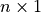

Version 0.64, October 28, 2014
Albert Gräf <aggraef@gmail.com>
Copyright (c) 2009-2014 by Albert Gräf. This document is available under the GNU Free Documentation License.
This manual describes the operations in the standard Pure library, including the prelude and the other library modules which come bundled with the interpreter.
There is a companion to this manual, The Pure Manual which describes the Pure language and the operation of the Pure interpreter.
The prelude defines the basic operations of the Pure language. This includes the basic arithmetic and logical operations, string, list and matrix functions, as well as the support operations required to implement list and matrix comprehensions. The string, matrix and record operations are in separate modules strings.pure, matrices.pure and records.pure, the primitive arithmetic and logical operations can be found in primitives.pure. Note that since the prelude module gets imported automatically (unless the interpreter is invoked with the --no-prelude option), all operations discussed in this section are normally available in Pure programs without requiring any explicit import declarations, unless explicitly noted otherwise.
The prelude also declares a signature of commonly used constant and operator symbols. This includes the truth values true and false.
These are actually just integers in Pure, but sometimes it’s convenient to refer to them using these symbolic constants.
In addition, the following special exception symbols are provided:
These are the built-in exception values. failed_cond denotes a failed conditional in guard or if-then-else; failed_match signals a failed pattern match in lambda, case expression, etc.; stack_fault means not enough stack space (PURE_STACK limit exceeded); and malloc_error indicates a memory allocation error.
These denote value mismatches a.k.a. dynamic typing errors. They are thrown by some operations when they fail to find an expected value of the corresponding type.
This exception is thrown by the index operator ! if a list, tuple or matrix index is out of bounds.
Here’s the list of predefined operator symbols. Note that the parser will automagically give unary minus the same precedence level as the corresponding binary operator.
infixl 1000 $$ ; // sequence operator
infixr 1100 $ ; // right-associative application
infixr 1200 , ; // pair (tuple)
infix 1300 => ; // key=>value pairs ("hash rocket")
infix 1400 .. ; // arithmetic sequences
infixr 1500 || ; // logical or (short-circuit)
infixr 1600 && ; // logical and (short-circuit)
prefix 1700 ~ ; // logical negation
infix 1800 < > <= >= == ~= ; // relations
infix 1800 === ~== ; // syntactic equality
infixr 1900 : ; // list cons
infix 2000 +: <: ; // complex numbers (cf. math.pure)
infixl 2100 << >> ; // bit shifts
infixl 2200 + - or ; // addition, bitwise or
infixl 2300 * / div mod and ; // multiplication, bitwise and
infixl 2300 % ; // exact division (cf. math.pure)
prefix 2400 not ; // bitwise not
infixr 2500 ^ ; // exponentiation
prefix 2600 # ; // size operator
infixl 2700 ! !! ; // indexing, slicing
infixr 2800 . ; // function composition
prefix 2900 ' ; // quote
postfix 3000 & ; // thunk
Some additional type symbols are provided which can be used as type tags on the left-hand side of equations, see Type Tags in the Pure Manual.
Additional number types.
These types are defined in a purely syntactic way, by checking the builtin-type or the constructor symbol of a number. Some semantic number types can be found in the math module, see Semantic Number Predicates and Types.
integer is the union of Pure’s built-in integer types, i.e., it comprises all int and bigint values. bool is a subtype of int which denotes just the normalized truth values 0 and 1 (a.k.a. false and true).
rational and complex are the rational and complex types, while real is the union of the double, integer and rational types (i.e., anything that can represent a real number and be used for the real and imaginary parts of a complex number). Finally, number is the union of all numeric types, i.e., this type can be used to match any kind of number.
Note that the operations of the rational and complex types are actually defined in the math module which isn’t part of the prelude, so you have to import this module in order to do computations with these types of values. However, the type tags and constructors for these types are defined in the prelude so that these kinds of values can be parsed and recognized without having the math module loaded.
The prelude also provides a subtype of the built-in string type which represents single-character strings:
A single character string. This matches any string value of length 1.
Lists and tuples can be matched with the following types:
The list and “proper” (or “recursive”) list types. Note that the former comprises both the empty list [] and all list nodes of the form x:xs (no matter whether the tail xs is a proper list value or not), whereas the latter only matches proper list values of the form x1:...:xn:[]. Thus the list type can be checked in O(1) time, while the rlist type is defined recursively and requires linear time (with respect to the size of the list) to be checked. This should be considered when deciding whether to use one or the other in a given situation; see Type Rules for further explanation.
The type of all tuples, comprises the empty tuple () and all tuples (x,xs) with at least two members. This is analogous to the list type above, but no “proper” tuple type is needed here since any tuple of this form is always a proper tuple.
There are some other, more specialized types representing various kinds of applications, function objects and other named entities. These are useful, in particular, for the definition of higher-order functions and for performing symbolic manipulations on unevaluated symbolic terms.
This type represents all unevaluated function or constructor applications of the form x y. This comprises constructor terms and quoted or partial function applications.
This type represents any term which may be called as a function. This may be a closure (global or local function, or a lambda function) which takes at least one argument, or a partial application of a closure to some arguments which is still “unsaturated”, i.e., expects some further arguments to be “ready to go”.
A named function object (global or local function, but not a partial application).
An anonymous (lambda) function.
Any kind of function object (named function or lambda). This is the union of the fun and lambda types.
This is a special kind of unevaluated parameterless function object used in lazy evaluation. See Lazy Evaluation and Streams in the Pure Manual.
A free variable. This can be any kind of symbol that could in principle be bound to a value (excluding operator and nonfix symbols).
Any kind of symbol (this also includes operator and nonfix symbols).
Corresponding type predicates are provided for all of the above, see Predicates. Some further types and predicates for matrices and records can be found under Matrix Inspection and Manipulation and Record Functions.
The prelude implements the following important function combinators.
Like in Haskell, these denote right-associative application and function composition. They are also defined as macros so that saturated calls of them are eliminated automatically. Examples:
> foo $ bar 99;
foo (bar 99)
> (foo.bar) 99;
foo (bar 99)
These are the customary identity and constant combinators from the combinatorial calculus:
> map id (1..5);
[1,2,3,4,5]
> map (cst 0) (1..5);
[0,0,0,0,0]
This combinator is basically equivalent to cst (), but with the special twist that it is also defined as a macro optimizing the case of “throwaway” list and matrix comprehensions. This is useful if a comprehension is evaluated solely for its side effects. E.g.:
> using system;
> extern int rand();
> foo = void [printf "%d\n" rand | _ = 1..3];
> show foo
foo = do (\_ -> printf "%d\n" rand) (1..3);
> foo;
1714636915
1957747793
424238335
()
Note that the above list comprehension is actually implemented using do (instead of map, which would normally be the case), so that the intermediate list value of the comprehension is never constructed. This is described in more detail in section Optimization Rules of the Pure Manual.
In addition, the prelude also provides the following combinators adopted from Haskell:
Swaps arguments of a binary function f, e.g.:
> map (flip (/) 2) (1..3);
[0.5,1.0,1.5]
This combinator is also used by the compiler to implement right operator sections, which allows you to write the above simply as:
> map (/2) (1..3);
[0.5,1.0,1.5]
Turns a function f expecting a pair of values into a curried function of two arguments:
> using system;
> dowith (curry (printf "%d: %g\n")) (0..2) [0.0,2.718,3.14];
0: 0
1: 2.718
2: 3.14
()
The inverse of curry. Turns a curried function f expecting two arguments into a function processing a single pair argument:
> map (uncurry (*)) [(2,3),(4,5),(6,7)];
[6,20,42]
These work analogously, but are used to convert between ternary curried functions and functions operating on triples.
This is the (normal order) fixed point combinator which allows you to create recursive anonymous functions. It takes another function f as its argument and applies f to fix f itself:
> let fact = fix (\f n -> if n<=0 then 1 else n*f (n-1));
> map fact (1..5);
[1,2,6,24,120]
See Fixed point combinator at Wikipedia for an explanation of how this magic works. Just like in Haskell, fix can be used to produce least fixed points of arbitrary functions. For instance:
> fix (cst bar);
bar
> let xs = fix (1:);
> xs;
1:#<thunk 0x7fe537fe2f90>
> xs!!(0..10);
[1,1,1,1,1,1,1,1,1,1,1]
The prelude defines the list and tuple constructors, as well as equality and inequality on these structures. It also provides a number of other useful basic operations on lists and tuples. These are all described below.
List and tuple constructors. These are right-associative in Pure.
Lists are the usual right-recursive aggregates of the form x:xs, where x denotes the head and xs the tail of the list, pretty much the same as in Lisp or Prolog except that they use a Haskell-like syntax. In contrast to Haskell, list concatenation is denoted ‘+‘ (see below), and lists may contain an arbitrary mixture of arguments, i.e., they are fully polymorphic:
> 1:2:3:[];
[1,2,3]
> [1,2,3]+[u,v,w]+[3.14];
[1,2,3,u,v,w,3.14]
Lists are eager in Pure by default, but they can also be made lazy (in the latter case they are also called streams). This is accomplished by turning the tail of a list into a “thunk” (a.k.a. “future”) which defers evaluation until the list tail is actually needed, see section Lazy Evaluation and Streams in the Pure Manual. For instance, an infinite arithmetic sequence (see below) will always produce a list with a thunked tail:
> 1:3..inf;
1:#<thunk 0x7f696cd2dbd8>
Pure also distinguishes proper and improper lists. The former are always terminated by an empty list in the final tail and can thus be written using the conventional [x1,x2,...,xn] syntax:
> 1:2:3:[];
[1,2,3]
In contrast, improper lists are terminated with a non-list value and can only be represented using the ‘:‘ operator:
> 1:2:3;
1:2:3
These aren’t of much use as ordinary list values, but are frequently encountered as patterns on the left-hand side of an equation, where the final tail is usually a variable. Also note that technically, a lazy list is also an improper list (although it may expand to a proper list value as it is traversed).
Tuples work in a similar fashion, but with the special twist that the pairing constructor ‘,‘ is associative (it always produces right-recursive pairs) and ‘()‘ acts as a neutral element on these constructs, so that ‘,‘ and ‘()‘ define a complete monoid structure. Note that this means that ‘,‘ is actually a “constructor with equations” since it obeys the laws (x,y),z == x,(y,z) and (),x == x,() == x. Also note that there isn’t a separate operation for concatenating tuples, since the pairing operator already does this:
> (1,2,3),(10,9,8);
1,2,3,10,9,8
> (),(a,b,c);
a,b,c
> (a,b,c),();
a,b,c
This also implies that tuples are always flat in Pure and can’t be nested; if you need this, you should use lists instead. Also, tuples are always eager in Pure.
Some important basic operations on lists and tuples are listed below.
List concatenation. This non-destructively appends the elements of y to x.
> [1,2,3]+[u,v,w];
[1,2,3,u,v,w]
Note that this operation in fact just recurses into x and replaces the empty list marking the “end” of x with y, as if defined by the following equations (however, the prelude actually defines this operation in a tail-recursive fashion):
[] + ys = ys;
(x:xs) + ys = x : xs+ys;
To make this work, both operands should be proper lists, otherwise you may get somewhat surprising (but correct) improper list results like the following:
> [1,2,3]+99;
1:2:3:99
> (1:2:3)+33;
1:2:36
This happens because Pure is dynamically typed and places no limits on ad hoc polymorphism. Note that the latter result is due to the fact that ‘+‘ also denotes the addition of numbers, and the improper tail of the first operand is a number in this case, as is the second operand. Otherwise you might have got an unreduced instance of the ‘+‘ operator instead.
Equality and inequality of lists and tuples. These compare two lists or tuples by recursively comparing their members, so ‘==‘ must be defined on the list or tuple members if you want to use these operations. Also note that these operations are inherently eager, so applying them to two infinite lists may take an infinite amount of time.
> reverse [a,b,c] == [c,b,a];
1
> (a,b,c) == ();
0
List and tuple size. This operation counts the number of elements in a list or tuple:
> #[a,b,c];
3
> #(a,b,c);
3
Please note that for obvious reasons this operation is inherently eager, so trying to compute the size of an infinite list will take forever.
Indexing of lists and tuples is always zero-based (i.e., indices run from 0 to #x-1), and an exception will be raised if the index is out of bounds:
> [1,2,3]!2;
3
> [1,2,3]!4;
<stdin>, line 34: unhandled exception 'out_of_bounds' while evaluating
'[1,2,3]!4'
The slicing operation takes a list or tuple and a list of indices and returns the list or tuple of the corresponding elements, respectively. Indices which are out of the valid range are silently ignored:
> (1..5)!!(3..10);
[4,5]
> (1,2,3,4,5)!!(3..10);
4,5
The case of contiguous index ranges, as shown above, is optimized so that it always works in linear time, see Slicing below for details. But indices can actually be specified in any order, so that you can retrieve any permutation of the members, also with duplicates. E.g.:
> (1..5)!![2,4,4,1];
[3,5,5,2]
This is less efficient than the case of contiguous index ranges, because it requires repeated traversals of the list for each index. For larger lists you should hence use vectors or matrices instead, to avoid the quadratic complexity.
Arithmetic sequences. Note that the Pure syntax differs from Haskell in that there are no brackets around the construct and a step width is indicated by specifying the first two elements as x:y instead of x,y.
> 1..5;
[1,2,3,4,5]
> 1:3..11;
[1,3,5,7,9,11]
To prevent unwanted artifacts due to rounding errors, the upper bound in a floating point sequence is always rounded to the nearest grid point:
> 0.0:0.1..0.29;
[0.0,0.1,0.2,0.3]
> 0.0:0.1..0.31;
[0.0,0.1,0.2,0.3]
Last but not least, you can specify infinite sequences with an infinite upper bound (inf or -inf):
> 1:3..inf;
1:#<thunk 0x7f696cd2dbd8>
> -1:-3..-inf;
-1:#<thunk 0x7f696cd2fde8>
The lower bounds of an arithmetic sequence must always be finite.
Test for the empty list and tuple.
> null [];
1
> null (a,b,c);
0
Reverse a list or tuple.
> reverse (1..5);
[5,4,3,2,1]
> reverse (a,b,c);
(c,b,a)
In addition, the prelude provides the following conversion operations.
Convert between (finite) lists and tuples.
> tuple (1..5);
1,2,3,4,5
> list (a,b,c);
[a,b,c]
The list function can be used to turn a finite lazy list into an eager one:
> list $ take 10 (-1:-3..-inf);
[-1,-3,-5,-7,-9,-11,-13,-15,-17,-19]
You can also achieve the same effect somewhat more conveniently by slicing a finite part from a stream:
> (-1:-3..-inf)!!(0..9);
[-1,-3,-5,-7,-9,-11,-13,-15,-17,-19]
Conversely, it is also possible to convert an (eager) list to a lazy one (a stream).
Convert a list to a stream.
> stream (1..10);
1:#<thunk 0x7fe537fe2b58>
This might appear a bit useless at first sight, since all elements of the stream are in fact already known. However, this operation then allows you to apply other functions to the list and have them evaluated in a lazy fashion.
Indexing and slicing are actually fairly general operations in Pure which are used not only in the context of lists and tuples, but for any type of container data structure which can be “indexed” in some way. Other examples in the standard library are the array and dict containers.
The prelude therefore implements slicing in a generic way, so that it works with any kind of container data structure which defines ‘!‘ in such a manner that it throws an exception when the index is out of bounds. It also works with any kind of index container that implements the catmap operation.
The prelude also optimizes the case of contiguous integer ranges so that slices like xs!!(i..j) are computed in linear time if possible. This works, in particular, with lists, strings and matrices.
Moreover, the prelude includes some optimization rules and corresponding helper functions to optimize the most common cases at compile time, so that the index range is never actually constructed. To these ends, the slicing expression xs!!(i..j) is translated to a call subseq xs i j of the special subseq function:
If x is a list, matrix or string, and i and j are int values, compute the slice xs!!(i..j) in the most efficient manner possible. This generally avoids constructing the index list i..j. Otherwise i..j is computed and subseq falls back to the slice function below to compute the slice in the usual way.
Compute the slice x!!ys using the standard slicing operation, without any special compile time tricks. (Runtime optimizations are still applied if possible.)
You can readily see the effects of this optimization by running the slicing operator against slice:
> let xs = 1..1000000;
> stats -m
> #slice xs (100000..299990);
199991
0.34s, 999957 cells
> #xs!!(100000..299990);
199991
0.14s, 399984 cells
Even more drastic improvements in both running time and memory usage can be seen in the case of matrix slices:
> let x = rowvector xs;
> #slice x (100000..299990);
199991
0.19s, 599990 cells
> #x!!(100000..299990);
199991
0s, 10 cells
The prelude provides another special kind of pairs called “hash pairs”, which take the form key=>value. These are used in various contexts to denote key-value associations. The only operations on hash pairs provided by the prelude are equality testing (which recursively compares the components) and the functions key and val:
The hash pair constructor, also known as the “hash rocket”.
Extract the components of a hash pair.
> key ("foo"=>99), val ("foo"=>99);
"foo",99
Note that in difference to the tuple operator ‘,‘, the hash rocket ‘=>‘ is non-associative, so nested applications must be parenthesized, and (x=>y)=>z is generally not the same as x=>(y=>z). Also note that ‘,‘ has lower precedence than ‘=>‘, so to include a tuple as key or value in a hash pair, the tuple must be parenthesized, as in "foo"=>(1,2) (whereas "foo"=>1,2 denotes a tuple whose first element happens to be a hash pair).
This mostly comes straight from the Q prelude which in turn was based on the first edition of the Bird/Wadler book, and is very similar to what you can find in the Haskell prelude. Some functions have slightly different names, though, and of course everything is typed dynamically.
test whether the predicate p holds for any of the members of xs
test whether the predicate p holds for all of the members of xs
concatenate a list of lists
convenience function which combines cat and map; this is also used to implement list comprehensions
apply f to all members of xs, like map, but throw away all intermediate results and return ()
remove n elements from the front of xs
remove elements from the front of xs while the predicate p is satisfied
return the list of all members of xs satisfying the predicate p
accumulate the binary function f over all members of xs, starting from the initial value a and working from the front of the list towards its end
accumulate the binary function f over all members of xs, starting from the value head xs and working from the front of the list towards its end; xs must be nonempty
accumulate the binary function f over all members of xs, starting from the initial value a and working from the end of the list towards its front
accumulate the binary function f over all members of xs, starting from the value last xs and working from the end of the list towards its front; xs must be nonempty
return the first element of xs; xs must be nonempty
search for an occurrence of x in xs and return the index of the first occurrence, if any, -1 otherwise
Note: This uses equality == to decide whether a member of xs is an occurrence of x, so == must have an appropriate definition on the list members.
return all but the last element of xs; xs must be nonempty
return the last element of xs; xs must be nonempty
convenience function which works like map, but also deals with matrix and string arguments while ensuring that the result is always a list; this is primarily used to implement list comprehensions
apply f to each member of xs
accumulate the binary function f over all members of xs, as with foldl, but return all intermediate results as a list
accumulate the binary function f over all members of xs, as with foldl1, but return all intermediate results as a list
accumulate the binary function f over all members of xs, as with foldr, but return all intermediate results as a list
accumulate the binary function f over all members of xs, as with foldr1, but return all intermediate results as a list
Sorts the elements of the list xs in ascending order according to the given predicate p, using the C qsort function. The predicate p is invoked with two arguments and should return a truth value indicating whether the first argument is “less than” the second. (An exception is raised if the result of a comparison is not a machine integer.)
> sort (>) (1..10);
[10,9,8,7,6,5,4,3,2,1]
> sort (<) ans;
[1,2,3,4,5,6,7,8,9,10]
return all but the first element of xs; xs must be nonempty
take n elements from the front of xs
take elements from the front of xs while the predicate p is satisfied
Some useful (infinite) list generators, as well as some finite (and eager) variations of these. The latter work like a combination of take or takewhile and the former, but are implemented directly for better efficiency.
cycles through the elements of the nonempty list xs, ad infinitum
returns the stream containing x, f x, f (f x), etc., ad infinitum
another eager version of iterate, returns the list of all elements from the front of iterate f x for which the predicate p holds
returns an infinite stream of xs
takes a list of pairs to a pair of lists of corresponding elements
return the list of corresponding pairs (x,y) where x runs through the elements of xs and y runs through the elements of ys
apply the binary function f to corresponding elements of xs and ys
apply the ternary function f to corresponding elements of xs, ys and zs
Pure also has the following variations of zipwith and zipwith3 which throw away all intermediate results and return the empty tuple (). That is, these work like do but pull arguments from two or three lists, respectively:
apply the binary function f to corresponding elements of xs and ys, return ()
apply the ternary function f to corresponding elements of xs, ys and zs, return ()
Pure strings are null-terminated character strings encoded in UTF-8, see the Pure Manual for details. The prelude provides various operations on strings, including a complete set of list-like operations, so that strings can be used mostly as if they were lists, although they are really implemented as C character arrays for reasons of efficiency. Pure also has some powerful operations to convert between Pure expressions and their string representation, see Eval and Friends for those.
String concatenation, indexing and slicing works just like with lists:
> "abc"+"xyz";
"abcxyz"
> let s = "The quick brown fox jumps over the lazy dog.";
> s!5;
"u"
> s!!(20..24);
"jumps"
Checking for empty strings and determining the size of a string also works as expected:
> null "";
1
> null s;
0
> #s;
44
String equality and comparisons. This employs the usual lexicographic order based on the (UTF-8) character codes.
> "awe">"awesome";
0
> "foo">="bar";
1
> "foo"=="bar";
0
You can search for the location of a substring in a string, and extract a substring of a given length:
Returns the (zero-based) index of the first occurrence of the substring u in s, or -1 if u is not found in s.
Extracts a substring of (at most) n characters at position i in s. This takes care of all corner cases, adjusting index and number of characters so that the index range stays confined to the source string.
Example:
> index s "jumps";
20
> substr s 20 10;
"jumps over"
Note that Pure doesn’t have a separate type for individual characters. Instead, these are represented as strings c containing exactly one (UTF-8) character (i.e., #c==1). It is possible to convert such single character strings to the corresponding integer character codes, and vice versa:
Ordinal number of a single character string c. This is the character’s code point in the Unicode character set.
Converts an integer back to the character with the corresponding code point.
In addition, the usual character arithmetic works, including arithmetic sequences of characters, so that you can write stuff like the following:
> "a"-"A";
32
> "u"-32;
"U"
> "a".."k";
["a","b","c","d","e","f","g","h","i","j","k"]
For convenience, the prelude provides the following functions to convert between strings and lists (or other aggregates) of characters.
Concatenate a list xs of strings (in particular, this converts a list of characters back to a string).
Convert a list, tuple or (symbolic) matrix of strings to a string. In the case of a list, this is synonymous with strcat, but it also works with the other types of aggregates.
For instance:
> list "abc";
["a","b","c"]
> string ("a".."z");
"abcdefghijklmnopqrstuvwxyz"
The following functions are provided to deal with strings of “tokens” separated by a given delimiter string.
Splits s into a list of substrings delimited by delim.
Joins the list of strings xs to a single string, interpolating the given delim string.
Example:
> let xs = split " " s; xs;
["The","quick","brown","fox","jumps","over","the","lazy","dog."]
> join ":" xs;
"The:quick:brown:fox:jumps:over:the:lazy:dog."
We mention in passing here that more elaborate string matching, splitting and replacement operations based on regular expressions are provided by the system module, see Regex Matching.
If that isn’t enough already, most generic list operations carry over to strings in the obvious way, treating the string like a list of characters. (Polymorphic operations such as map, which aren’t guaranteed to yield string results under all circumstances, will actually return lists in that case, so you might have to apply string explicitly to convert these back to a string.) For instance:
> filter (>="k") s;
"qukrownoxumpsovrtlzyo"
> string $ map pred "ibm";
"hal"
List comprehensions can draw values from strings, too:
> string [x+1 | x="HAL"];
"IBM"
The following routines are provided by the runtime to turn raw C char* pointers (also called byte strings in Pure parlance, to distinguish them from Pure’s “cooked” UTF-8 string values) into corresponding Pure strings. Normally you don’t have to worry about this, because the C interface already takes care of the necessary marshalling, but in some low-level code these operations are useful. Also note that here and in the following, the cstring routines also convert the string between the system encoding and Pure’s internal UTF-8 representation.
Convert a pointer s to a Pure string. s must point to a null-terminated C string. These routines take ownership of the original string value, assuming it to be malloced, so you should only use these for C strings which are specifically intended to be freed by the user.
Convert a pointer s to a Pure string. Like above, but these functions take a copy of the string, leaving the original C string untouched.
The reverse transformations are also provided. These take a Pure string to a byte string (raw char*).
Construct a byte string from a Pure string s. The result is a raw pointer object pointing to the converted string. The original Pure string is always copied (and, in the case of byte_cstring, converted to the system encoding). The resulting byte string is a malloced pointer which can be used like a C char*, and has to be freed explicitly by the caller when no longer needed.
It is also possible to convert Pure string lists or symbolic vectors of strings to byte string vectors and vice versa. These are useful if you need to pass an argv-like string vector (i.e., a char** or char*[]) to C routines. The computed C vectors are malloced pointers which have an extra NULL pointer as the last entry, and should thus be usable for almost any purpose which requires such a string vector in C. They also take care of garbage-collecting themselves. The original string data is always copied. As usual, the cstring variants do automatic conversions to the system encoding.
Convert a list or vector of Pure strings to a C char**.
Note that the back conversions take an additional first argument which denotes the number of strings to retrieve. If you know that the vector is NULL-terminated then this can also be an infinite value (inf) in which case the number of elements will be figured out automatically. Processing always stops at the first NULL pointer encountered.
Also note that, as of version 0.45, Pure has built-in support for passing argv-style vectors as arguments by means of the char** and void** pointer types. However, the operations provided here are more general in that they allow you to both encode and decode such values in an explicit fashion. This is useful, e.g., for operations like getopt which may mutate the given char** vector.
If you have getopt in your C library, you can try the following example. First enter these definitions:
extern int getopt(int argc, char **argv, char *optstring);
optind = get_int $ addr "optind";
optarg = cstring_dup $ get_pointer $ addr "optarg";
Now let’s run getopt on a byte string vector constructed from an argument vector (which includes the “program name” in the first element):
> let args = byte_cstring_pointer {"progname","boo","-n","-tfoo","bar"};
> getopt 5 args "nt:", optarg;
110,#<pointer 0x0>
> getopt 5 args "nt:", optarg;
116,"foo"
> getopt 5 args "nt:", optarg;
-1,#<pointer 0x0>
Note that 110 and 116 are the character codes of the option characters n and t, where the latter option takes an argument, as returned by optarg. Finally, getopt returns -1 to indicate that there are no more options, and we can retrieve the current optindex value and the mutated argument vector to see which non-option arguments remain to be processed, as follows:
> optind, cstring_vector 5 args;
3,{"progname","-n","-tfoo","boo","bar"}
It is now an easy exercise to design your own high-level wrapper around getopt to process command line arguments in Pure. However, this isn’t really necessary since the Pure library already offers such an operation which doesn’t rely on any special system functions, see Option Parsing in the System Interface section.
Matrices are provided as an alternative to the list and tuple aggregates which provide contant time access to their members and are tailored for use in numeric computations.
Determine the size of a matrix (number of elements) and its dimensions (number of rows and columns).
> let x = {1,2,3;4,5,6}; #x;
6
> dim x;
2,3
Check for empty matrices. Note that there are various kinds of these, as a matrix may have zero rows or columns, or both.
Matrix equality and inequality. These check the dimensions and the matrix elements for equality:
> x == transpose x;
0
Indexing and slicing employ the standard Pure operators ‘!‘ and ‘!!‘. They work pretty much like in MATLAB and Octave, but note that Pure matrices are in row-major order and the indices are zero-based. It is possible to access elements with a one-dimensional index (in row-major oder):
> x!3;
4
Or you can specify a pair of row and column index:
> x!(1,0);
4
Slicing works accordingly. You can either specify a list of (one- or two-dimensional) indices, in which case the result is always a row vector:
> x!!(2..5);
{3,4,5,6}
Or you can specify a pair of row and column index lists:
> x!!(0..1,1..2);
{2,3;5,6}
The following abbreviations are provided to grab a slice from a row or column:
> x!!(1,1..2);
{5,6}
> x!!(0..1,1);
{2;5}
As in the case of lists, matrix slices are optimized to handle cases with contiguous index ranges in an efficient manner, see Slicing for details. To these ends, the helper functions subseq and subseq2 are defined to handle the necessary compile time optimizations.
Most of the generic list operations are implemented on matrices as well, see Common List Functions. Hence operations like map and zipwith work as expected:
> map succ {1,2,3;4,5,6};
{2,3,4;5,6,7}
> zipwith (+) {1,2,3;4,5,6} {1,0,1;0,2,0};
{2,2,4;4,7,6}
The matrix module also provides a bunch of other specialized matrix operations, including all the necessary operations for matrix comprehensions. We briefly summarize the most important operations below; please refer to matrices.pure for all the gory details. Also make sure you check Matrices and Vectors in the Pure Manual for some more examples, and the Record Functions section for an implementation of records using symbolic vectors.
This function converts a list or tuple to a corresponding matrix. matrix also turns a list of lists or matrices specifying the rows of the matrix to the corresponding rectangular matrix; otherwise, the result is a row vector. (In the former case, matrix may throw a bad_matrix_value exception in case of dimension mismatch, with the offending submatrix as argument.)
> matrix [1,2,3];
{1,2,3}
> matrix [[1,2,3],[4,5,6]];
{1,2,3;4,5,6}
The rowvector and colvector functions work in a similar fashion, but expect a list, tuple or matrix of elements and always return a row or column vector, respectively (i.e., a or  matrix, where is the size of the converted aggregate). Also, the vector function is a synonym for rowvector. These functions can also be used to create recursive (symbolic) matrix structures of arbitrary depth, which provide a nested array data structure with efficient (constant time) element access.
> rowvector [1,2,3];
{1,2,3}
> colvector [1,2,3];
{1;2;3}
> vector [rowvector [1,2,3],colvector [4,5,6]];
{{1,2,3},{4;5;6}}
Note that for convenience, there’s also an alternative syntax for entering nested vectors more easily, see the description of the non-splicing vector brackets below for details.
With these functions you can create a row or column vector from an arithmetic sequence. Again, vectorseq is provided as a synonym for rowvectorseq. These operations are optimized for the case of int and double ranges.
> rowvectorseq 0 10 1;
{0,1,2,3,4,5,6,7,8,9,10}
> colvectorseq 0 10 1;
{0;1;2;3;4;5;6;7;8;9;10}
> vectorseq 0.0 0.9 0.1;
{0.0,0.1,0.2,0.3,0.4,0.5,0.6,0.7,0.8,0.9}
The prelude also contains some optimization rules which translate calls to vector et al on arithmetic sequences to the corresponding calls to vectorseq et al, such as:
def vector (n1:n2..m) = vectorseq n1 m (n2-n1);
def vector (n..m) = vectorseq n m 1;
Example:
> foo = vector (1..10);
> bar = vector (0.0:0.1..0.9);
> show foo bar
bar = vectorseq 0.0 0.9 0.1;
foo = vectorseq 1 10 1;
> foo; bar;
{1,2,3,4,5,6,7,8,9,10}
{0.0,0.1,0.2,0.3,0.4,0.5,0.6,0.7,0.8,0.9}
Please note that these optimization rules assume that basic arithmetic works with the involved elements, which may give you trouble if you try to use vector et al with exotic kinds of user-defined arithmetic sequences. To disable them, simply run the interpreter with the option --disable vectorseq-opt.
These functions convert a list or matrix to a matrix of the corresponding type (integer, double, complex or symbolic). If the input is a list, the result is always a row vector; this is usually faster than the matrix and vector operations, but requires that the elements already are of the appropriate type.
> imatrix [1,2,3];
{1,2,3}
> dmatrix {1,2,3;4,5,6};
{1.0,2.0,3.0;4.0,5.0,6.0}
In addition, these functions can also be invoked with either an int n or a pair (n,m) of ints as argument, in which case they construct a zero rowvector or matrix with the corresponding dimensions.
> imatrix 3;
{0,0,0}
> imatrix (2,3);
{0,0,0;0,0,0}
These convert a matrix back to a flat list or tuple. The list2 function converts a matrix to a list of lists (one sublist for each row of the matrix).
> tuple {1,2,3;4,5,6};
1,2,3,4,5,6
> list {1,2,3;4,5,6};
[1,2,3,4,5,6]
> list2 {1,2,3;4,5,6};
[[1,2,3],[4,5,6]]
> list2 {1,2,3};
[[1,2,3]]
In addition, the following special syntax is provided as a shorthand notation for nested vector structures:
Non-splicing vector brackets. These work like {x,y,z,...}, but unlike these they will not splice submatrices in the arguments x,y,z,... So they work a bit like quoted vectors '{x,y,z,...}, but the arguments x,y,z,... will be evaluated as usual.
The non-splicing vector brackets provide a convenient shorthand to enter symbolic vector values which may contain other vectors or matrices as components. For instance, note how the ordinary matrix brackets combine the column subvectors in the first example below to a 3x2 matrix, while the non-splicing brackets in the second example create a 1x2 row vector with the column vectors as members instead:
> {{1;2;3},{4;5;6}};
{1,4;2,5;3,6}
> {|{1;2;3},{4;5;6}|};
{{1;2;3},{4;5;6}}
The second example works like a quoted matrix expression such as '{{1;2;3},{4;5;6}}, but the non-splicing brackets also evaluate their arguments:
> '{vector (1..3),vector (4..6)};
{vector (1..3),vector (4..6)}
> {|vector (1..3),vector (4..6)|};
{{1,2,3},{4,5,6}}
The {| |} brackets can be nested. Examples:
> {|1,{|vector (1..5),2*3|},{}|};
{1,{{1,2,3,4,5},6},{}}
> {|{|{1,2}|},{|{3,4}|}|};
{{{1,2}},{{3,4}}}
Also note that the {| |} brackets only produce row vectors, but you can just transpose the result if you need a column vector instead:
> transpose {|{1;2;3},{4;5;6}|};
{{1;2;3};{4;5;6}}
Finally, note that the notation {| |} without any arguments is not supported, simply write {} for the empty vector instead.
Convenience types for the different subtypes of matrices (double, complex, int, symbolic and numeric, i.e., non-symbolic). These can be used as type tags on the left-hand side of equations to match specific types of matrices.
Corresponding predicates to check for different kinds of matrices.
Check for different kinds of vectors (these are just matrices with one row or column).
The stride of a matrix denotes the real row size of the underlying C array, see the description of the pack function below for further details. There’s little use for this value in Pure, but it may be needed when interfacing to C.
Helper functions to optimize matrix slices, see Slicing for details. subseq2 is a special version of subseq which is used to optimize the case of 2-dimensional matrix slices xs!!(i..j,k..l).
Extract (sub-,super-) diagonals from a matrix. Sub- and super-diagonals for k=0 return the main diagonal. Indices for sub- and super-diagonals can also be negative, in which case the corresponding super- or sub-diagonal is returned instead. In each case the result is a row vector.
Extract a submatrix of a given size at a given offset. The result shares the underlying storage with the input matrix (i.e., matrix elements are not copied) and so this is a comparatively cheap operation.
Construct matrices from lists of rows and columns. These take either scalars or submatrices as inputs; corresponding dimensions must match. rowcat combines submatrices vertically, like {x;y}; colcat combines them horizontally, like {x,y}. Note: Like the built-in matrix constructs, these operations may throw a bad_matrix_value exception in case of dimension mismatch.
Construct a matrix from a (symbolic) matrix of other matrices and/or scalars. This works like a combination of rowcat and colcat, but draws its input from a matrix instead of a list of matrices, and preserves the overall layout of the “host” matrix. The net effect is that the host matrix is flattened out. If all elements of the input matrix are scalars already, the input matrix is returned unchanged.
Various combinations of rowcat, colcat and map. These are used, in particular, for implementing matrix comprehensions.
Create a (sub-,super-) diagonal matrix from a row vector x of size n. The result is always a square matrix with dimension (n+k,n+k), which is of the same matrix type (double, complex, int, symbolic) as the input and has the elements of the vector on its kth sub- or super-diagonal, with all other elements zero. A negative value for k turns a sub- into a super-diagonal matrix and vice versa.
Extract the real and imaginary parts and compute the conjugate of a numeric matrix.
Pack a matrix. This creates a copy of the matrix which has the data in contiguous storage. It also frees up extra memory if the matrix was created as a slice from a bigger matrix (see submat above) which has since gone the way of the dodo. The packed predicate can be used to verify whether a matrix is already packed. Note that even if a matrix is already packed, pack will make a copy of it anyway, so pack also provides a quick way to copy a matrix, e.g., if you want to pass it as an input/output parameter to a GSL routine.
Change the dimensions of a matrix without changing its size. The total number of elements must match that of the input matrix. Reuses the underlying storage of the input matrix if possible (i.e., if the matrix is packed). You can also redim a matrix to a given row size n. In this case the row size must divide the total size of the matrix.
Sorts the elements of a matrix (non-destructively, i.e., without changing the original matrix) according to the given predicate, using the C qsort function. This works exactly the same as with lists (see Common List Functions), except that it takes and returns a matrix instead of a list. Note that the function sorts all elements of the matrix in one go (regardless of the dimensions), as if the matrix was a single big vector. The result matrix has the same dimensions as the input matrix. Example:
> sort (<) {10,9;8,7;6,5};
{5,6;7,8;9,10}
If you’d like to sort the individual rows instead, you can do that as follows:
> sort_rows p = rowcat . map (sort p) . rows;
> sort_rows (<) {10,9;8,7;6,5};
{9,10;7,8;5,6}
Likewise, to sort the columns of a matrix:
> sort_cols p = colcat . map (sort p) . cols;
> sort_cols (<) {10,9;8,7;6,5};
{6,5;8,7;10,9}
Also note that the pure-gsl module provides an interface to the GSL routines for sorting numeric (int and double) vectors using the standard order. These will usually be much faster than sort, whereas sort is more flexible in that it also allows you to sort symbolic matrices and to choose the order predicate.
Transpose a matrix. Example:
> transpose {1,2,3;4,5,6};
{1,4;2,5;3,6}
Last but not least, the matrix module also offers a bunch of low-level operations for converting between matrices and raw pointers. These are typically used to shovel around massive amounts of numeric data between Pure and external C routines, when performance and throughput is an important consideration (e.g., graphics, video and audio applications). The usual caveats concerning direct pointer manipulations apply.
Get a pointer to the underlying C array of a matrix. The data is not copied. Hence you have to be careful when passing such a pointer to C functions if the underlying data is non-contiguous; when in doubt, first use the pack function to place the data in contiguous storage, or use one of the matrix-pointer conversion routines below.
These operations copy the contents of a matrix to a given pointer and return that pointer, converting to the target data type on the fly if necessary. The given pointer may also be NULL, in which case suitable memory is malloced and returned; otherwise the caller must ensure that the memory pointed to by p is big enough for the contents of the given matrix. The source matrix x may be an arbitrary numeric matrix. In the case of int64_pointer, x may also be a symbolic matrix holding bigint values which are converted to 64 bit machine integers.
These functions allow you to create a matrix from a pointer, copying the data and converting it from the source type on the fly if necessary. The result will be a numeric matrix of the appropriate type, except in the case of int64_matrix where the result is a symbolic matrix consisting of bigint values. The source pointer p may also be NULL, in which case the new matrix is filled with zeros instead. Otherwise the caller must ensure that the pointer points to properly initialized memory big enough for the requested dimensions. The given dimension may also be just an integer n if a row vector is to be created.
These operations can be used to create a numeric matrix view of existing data, without copying the data. The data must be double, complex or int, the pointer must not be NULL and the caller must also ensure that the memory persists for the entire lifetime of the matrix object. The given dimension may also be just an integer n if a row vector view is to be created.
As of Pure 0.41, the prelude also provides a basic record data structure, implemented as symbolic vectors of key=>value pairs which support a few dictionary-like operations such as member, insert and indexing. Records may be represented as row, column or empty vectors (i.e., the number of rows or columns must be zero or one). They must be symbolic matrices consisting only of “hash pairs” key=>value, where the keys can be either symbols or strings. The values can be any kind of Pure data; in particular, they may themselves be records, so records can be nested.
The following operations are provided. Please note that all updates of record members are non-destructive and thus involve copying, which takes linear time (and space) and thus might be slow for large record values; if this is a problem then you should use dictionaries instead (cf. Dictionaries). Or you can create mutable records by using expression references (cf. Expression References) as values, which allow you to modify the data in-place. Element lookup (indexing) uses binary search on an internal index data structure and thus takes logarithmic time once the index has been constructed (which is done automatically when needed, or when calling recordp on a fresh record value).
Also note that records with duplicate keys are permitted; in such a case the following operations will always operate on the last entry for a given key.
The record type. This is functionally equivalent to recordp, but can be used as a type tag on the left-hand side of equations.
Check for record values.
Normalizes a record. This removes duplicate keys and orders the record by keys (using an apparently random but well-defined order of the key values), so that normalized records are syntactically equal (===) if and only if they contain the same hash pairs. For convenience, this function can also be used directly on lists and tuples of hash pairs to convert them to a normalized record value.
The size of a record (number of entries it contains). Duplicate entries are counted. (This is in fact just the standard matrix size operation.)
Check whether x contains the key y.
Retrieves the (last) value associated with the key y in x, if any, otherwise throws an out_of_bounds exception.
Slicing also works as expected, by virtue of the generic definition of slicing provided by the matrix data structure.
Associate the key y with the value z in x. If x already contains the key y then the corresponding value is updated (the last such value if x contains more than one association for y), otherwise a new member is inserted at the end of the record.
Delete the key y (and its associated value) from x. If x contains more than one entry for y then the last such entry is removed.
List the keys and associated values of x. If the record contains duplicate keys, they are all listed in the order in which they are stored in the record.
Here are a few basic examples:
> let r = {x=>5, y=>12};
> r!y; r!![y,x]; // indexing and slicing
12
{12,5}
> keys r; vals r; // keys and values of a record
{x,y}
{5,12}
> insert r (x=>99); // update an existing entry
{x=>99,y=>12}
> insert ans (z=>77); // add a new entry
{x=>99,y=>12,z=>77}
> delete ans z; // delete an existing entry
{x=>99,y=>12}
> let r = {r,x=>7,z=>3}; r; // duplicate key x
{x=>5,y=>12,x=>7,z=>3}
> r!x, r!z; // indexing returns the last value of x
7,3
> delete r x; // delete removes the last entry for x
{x=>5,y=>12,z=>3}
> record r; // normalize (remove dups and sort)
{x=>7,y=>12,z=>3}
> record [x=>5, x=>7, y=>12]; // construct a normalized record from a list
{x=>7,y=>12}
> record (x=>5, x=>7, y=>12); // ... or a tuple
{x=>7,y=>12}
More examples can be found in the Record Data section in the Pure Manual.
This prelude module is a collection of various lowlevel operations, which are implemented either directly by machine instructions or by C functions provided in the runtime. In particular, this module defines the basic arithmetic and logic operations on machine integers, bigints and floating point numbers, as well as various type checking predicates and conversions between different types. Some basic pointer operations are also provided, as well as “sentries” (Pure’s flavour of object finalizers) and “references” (mutable expression pointers).
IEEE floating point infinities and NaNs. You can test for these using the infp and nanp predicates, see Predicates below.
Generic null pointer. (This is actually a built-in constant.) You can also check for null pointers with the null predicate, see Predicates.
The basic arithmetic and logic operations provided by this module are summarized in the following table:
| Kind | Operator | Meaning |
|---|---|---|
| Arithmetic | + - | addition, subtraction (also unary minus) |
| * / | multiplication, division (inexact) | |
| div mod | exact int/bigint division/modulus | |
| ^ | exponentiation (inexact) | |
| Comparisons | == ~= | equality, inequality |
| < > | less than, greater than | |
| <= >= | less than or equal, greater than or equal | |
| Logic | ~ | logical not |
| && || | and, or (short-circuit) | |
| Bitwise | not | bitwise not |
| and or | and, or | |
| << >> | bit shifts |
Precedence and and associativity of the operators can be found in the operators table at the beginning of this section.
The names of some operations are at odds with C. Note, in particular, that logical negation is denoted ~ instead of ! (and, consequently, ~= denotes inequality, rather than !=), and the bitwise operations are named differently. This is necessary because Pure uses !, & and | for other purposes. Also, / always denotes inexact (double) division in Pure, whereas the integer division operators are called div and mod. (%, which is not defined by this module, also has a different meaning in Pure; it’s the exact division operator, see Rational Numbers.)
The above operations are implemented for int, bigint and, where appropriate, double operands. (Pointer arithmetic and comparisons are provided in a separate module, see Pointer Arithmetic.) The math module (see Mathematical Functions) also provides implementations of the arithmetic and comparison operators for rational, complex and complex rational numbers.
Note that the logical operations are actually implemented as special forms in order to provide for short-circuit evaluation. This needs special support from the compiler to work. The primitives module still provides definitions for these, as well as other special forms like quote and the thunking operator & so that they may be used as function values and in partial applications, but when used in this manner they lose all their special call-by-name properties; see Special Forms in the Pure Manual for details. The rules for the logical connectives are actually slightly more general than the built-in rules so that an expression of the form x&&y or x||y will always be simplified in a sensible way if at least one of the operands is a machine int; e.g., both x&&1 and 1&&x will reduce to just x if x is not a machine int.
A detailed listing of the basic arithmetic and logical operations follows below.
Addition, subtraction, multiplication, division and exponentiation. The latter two are inexact and will yield double results.
Logical negation, conjunction and disjunction. These work with machine ints only and are evaluated in short-circuit mode, unless they are invoked as higher-order functions or with operands which aren’t machine ints. See the explanations above.
Bitwise negation, conjunction and disjunction. These work with both machine ints and bigints.
Arithmetic bit shifts. The left operand x may be a machine int or a bigint. The right operand k must be a machine int and denotes the (nonnegative) number of bits to shift.
Note
This operation may expand to a single machine instruction in the right circumstances, thus the condition that k be nonnegative isn’t always checked. This may lead to surprising results if you do specify a negative value for k. However, in the current implementation bigint shifts do check the sign of k and handle it in the appropriate way, by turning a left shift into a corresponding right shift and vice versa.
In addition, the following arithmetic and numeric functions are provided:
Minimum and maximum of two values. This works with any kind of values which have the ordering relations defined on them.
The greatest common divisor and least common multiple functions from the GMP library. These return a bigint if at least one of the arguments is a bigint, a machine int otherwise.
Computes exact powers of ints and bigints. The result is always a bigint. Note that y must always be nonnegative here, but see the math module (Mathematical Functions) which deals with the case y<0 using rational numbers.
These operations convert between various types of Pure values.
Compute a 32 bit hash code of a Pure expression.
Convert a machine integer to a normalized truth value (0 or 1).
Convert a string, int or bigint to a pointer value. Converting a string returns a pointer to the underlying UTF8-encoded C string so that it can be passed to the appropriate C functions. Converting an integer gives a pointer with the given numeric address. This may be used to construct special pointer values such as the null pointer (pointer 0).
Convert signed (8/16/32/64) bit integers to the corresponding unsigned quantities. These functions behave as if the value was “cast” to the corresponding unsigned C type, and are most useful for dealing with unsigned integers returned by external C routines. The routines always use the smallest Pure int type capable of holding the result: int for ubyte and ushort, bigint for uint, uint64 and ulong. All routines take int parameters. In the case of uint64, a bigint parameter is also permitted (which is what the C interface returns for 64 bit values). Also note that ulong reduces to either uint or uint64, depending on the size of long for the host architecture.
The following rounding functions work with all kinds of numbers:
Fractional part (x-trunc x).
Note that all these functions return double values for double arguments, so if you need an integer result then you’ll have to apply a suitable conversion, as in int (floor x).
A syntactic equality test is provided, as well as various type checking predicates. Note that type definitions are provided for most of the type checking predicates which don’t denote built-in types; see Prelude Types for details.
Syntactic equality. In contrast to == and ~=, this is defined on all Pure expressions. Basically, two expressions are syntactically equal if they print out the same in the interpreter. In the special case of pointer objects and closures, which do not always have a syntactic representation in Pure, x and y must be the same object (same pointer value or function).
Generic type checking predicate. This checks whether x is of type ty, where ty is a symbol denoting any of the built-in types (int, bigint etc.) or any type defined in a type definition. (Note that you may have to quote ty if it happens to be defined as a variable or parameterless function.)
Predicates to check for the built-in types.
Predicate to check for normalized truth values (0 and 1).
Predicate to check for single character strings.
Additional number predicates. Note some further “semantic” number predicates are defined in the math module, see Semantic Number Predicates and Types.
Check whether a number is exact (i.e., doesn’t contain any double components).
Check for null pointers.
Predicates to check for function applications, lists, proper lists and tuples. Note that listp only checks for a toplevel list constructor, whereas rlistp also recursively checks the tails of the list; the latter may need time proportional to the list size. The applp and tuplep predicates look for an application or tuple constructor at the toplevel only, which can always be done in constant time.
Predicates to check for various kinds of function objects (named, anonymous or thunk). closurep checks for any kind of “normal” closure (i.e., named functions and lambdas, but not thunks).
Convenience function to check for “callable” functions. This includes any kind of closure with a nonzero argument count as well as partial (unsaturated) applications of these.
Predicates to check for any kind of symbol (this also includes operator and nonfix symbols) and for free variable symbols, respectively. Note that varp returns true for any symbol which is not an operator or nonfix symbol (i.e., for any symbol that could in principle be bound to a value, either globally or locally). This holds even if the symbol is currently bound to a function, macro or constant.
The following operations let you peek at various internal information that the interpreter provides to Pure programs either for convenience or for metaprogramming purposes. They are complemented by the evaluation primitives discussed below, see Eval and Friends.
Retrieve the most recently printed result of a toplevel expression evaluated in the read-eval-print loop. This is just a convenience for interactive usage. Note that the ans value will stick around until a new expression is computed. (It is possible to clear the ans value with the interactive command clear ans, however.) Example:
> 1/3;
0.333333333333333
> ans/2;
0.166666666666667
Returns the (lexically) innermost function at the point of the call. This can be either a global function, a local (named) function introduced in a with clause or an anonymous function (a lambda). Fails (returning just the literal symbol __func__ by default) if there is no such function (i.e., if the call is at the toplevel). Note that in contrast to the C99 variable of the same name, this really returns the function value itself in Pure; the str function can be used if you need the print name of the function. Examples:
> foo x = if x>0 then x else throw __func__;
> foo (-99);
<stdin>, line 2: unhandled exception 'foo' while evaluating 'foo (-99)'
> (\x->x+": "+str __func__) "test";
"test: #<closure 0x7f4a2411db30>"
If you want, you can add a default rule for __func__ which specifies the behaviour when __func__ gets called at the global level. E.g.:
> __func__ = throw "__func__ called at global level";
> __func__;
<stdin>, line 5: unhandled exception '"__func__ called at global level"' while
evaluating '__func__'
Returns the current namespace at the point of the call. This is implemented as a built-in macro which expands to a string. The empty string is returned in the default namespace. Example:
> namespace foo;
> foo = __namespace__;
> namespace;
> show foo::foo
foo::foo = "foo";
> foo::foo;
"foo"
Returns the directory and absolute filename of the current script, using the canonicalized pathname of the script, as explained in Modules and Imports. The directory name is always terminated with a trailing slash. These macros are useful, e.g., for debugging purposes or if a script needs to locate other files relative to the script file. Like __namespace__, these are built-in macros which expand to string values.
The script name is resolved at compile time, so these macros are most useful if a script is run through the interpreter. Also note that both macros return the empty string if the code containing the call is not in a script (i.e., if it is executed directly at the interactive command line or through eval). For instance, assume that the following code is stored in the file /home/user/test.pure:
foo = __file__,__dir__;
bar = eval "__file__,__dir__";
Then running this script interactively you’ll get the following:
> foo;
"/home/user/test.pure","/home/user/"
> bar;
"",""
This expands a (literal) tuple to a list, preserving embedded tuples in the same way that list values are parsed in the Pure language, cf. Primary Expressions. This is provided for the benefit of custom aggregate notations (usually implemented as outfix operators) which are supposed to be parsed like the built-in list and matrix brackets. Example:
> outfix (: :);
> def (:x:) = __list__ x;
> (:(1,2),(3,4):);
[(1,2),(3,4)]
Note that this macro uses internal information from the parser not available to Pure programs. Thus there’s no way to actually define this macro in Pure, which is why it is provided as a builtin instead.
Another rather obscure point that deserves mentioning here is that the special processing of parenthesized expressions happens also if the macro is applied in prefix form. This should rarely be a problem in practice, but if it is then you can use $ to pass arguments without adding an (undesired) extra level of parentheses:
> ((::)) ((1,2),(3,4));
[(1,2,3,4)]
> ((::)) $ (1,2),(3,4);
[(1,2),(3,4)]
Note that the first expression is really equivalent to (:((1,2),(3,4)):), not (:(1,2),(3,4):) which can be specified in prefix form using $ as shown in the second expression. (Remember that $ is also implemented as a macro and so is substituted away at macro expansion time in the example above.) The same trick works if for some reason you want to apply __list__ in a direct fashion:
> __list__ ((1,2),(3,4));
[(1,2,3,4)]
> __list__ $ (1,2),(3,4);
[(1,2),(3,4)]
Built-in macro which expands to a list with the local function bindings (with clauses) visible at this point in the program. The return value is a list of hash pairs x=>f where x is the global symbol denoting the function (the symbol is always quoted) and f is the function value itself. Example:
> __locals__ with foo x = x+1; x = a+b end;
[x=>a+b,foo=>foo]
> f 99 when _=>f = ans!1 end;
100
The __locals__ macro is useful for debugging purposes, as well as to implement dynamic environments. It is also used internally to implement the reduce macro, see Eval and Friends. Here are some things that you should keep in mind when working with this macro:
__locals__ always evaluates parameterless functions and returns the resulting value instead of a closure (as can be seen in the binding x=>a+b in the example above). Normally this is what you want, but it can be a problem with parameterless functions involving side effects. In such a case, if you want to evaluate the function at a later time, you’ll either have to use a thunk or massage the local function so that it takes a dummy argument such as ().
If the call to __locals__ is inside a local function then that local function will itself be excluded from the constructed environment. This is done in order to prevent infinite recursion if the calling function does not have any parameters (which is a common idiom, especially in applications of the reduce macro). If you really want the calling function to be in the environment, you’ll have to add it to the result of __locals__ yourself. Using the __func__ primitive from above, we can implement this as a macro:
def __mylocals__ = [val (str __func__)=>__func__]+__locals__;
You can then use __mylocals__ instead of __locals__ whenever you want the calling function to be included in the computed environment.
__locals__ will use as keys in the resulting list whatever global symbols are in scope at the point of the call. By default, i.e., if no global symbol with the same print name as the local is visible at the point of the call, a symbol in the default namespace is used, as we’ve seen above. Otherwise the result may be also be a qualified symbol if such a symbol has already been declared or defined at the point of the call. For instance:
> namespace foo;
> public foo;
> __locals__ with foo x = x+1 end;
[foo::foo=>foo]
This behaviour may be a bit surprising at first sight, but is consistent with the way the interpreter performs its symbol lookup, see Symbol Lookup and Creation for details.
The following functions allow you to inspect or modify the function, type, macro, constant and variable definitions of the running program. This uses a special meta representation for rewriting rules and definitions. Please see the Macros section in the Pure manual for details. Also note that these operations are subject to some limitations, please check the remarks concerning eval and evalcmd in the following subsection for details.
If the given symbol is defined as a function, type or macro, return the corresponding list of rewriting rules. Otherwise return the empty list.
If the given symbol is defined as an interface type, return its definition; otherwise return the empty list. get_interface returns the list of patterns used to declare the type, while get_interface_typedef returns the actual list of type rules, in the same format as with get_typedef. Note that the latter may be empty even if the type is defined, meaning that the type hasn’t been instantiated yet, see Interface Types for details. Also note that Pure allows you to have both an interface and a regular (concrete) definition of a type, in which case get_typedef and get_interface_typedef may both return nonempty (and usually different) results.
If the given symbol is defined as a variable or constant, return the corresponding definition as a singleton list of the form [sym --> value]. Otherwise return the empty list.
The following functions may fail in case of error, in which case lasterr is set accordingly (see Eval and Friends below).
Add the given rewriting rules (given in the same format as returned by the get_fundef, get_typedef and get_macdef functions above) to the running program.
Same as above, but add the given rewriting rules at (i.e., before) the given rule r (which must already exist, otherwise the call fails). Note that all added rules must have the same head symbol on the left-hand side, which matches the head symbol on the left-hand side of r.
Add the given patterns to the interface type sym (given as a symbol). If the interface type doesn’t exist yet, it will be created.
Same as above, but add the given patterns at (i.e., before) the given pattern p (the given interface type must already exist and contain the given pattern, otherwise the call fails).
Define variables and constants. Each rule must take the form sym --> value with a symbol on the left-hand side (no pattern matching is performed by these functions).
The following functions may be used to delete individual rewriting rules, interface type patterns or variable and constant symbols.
Delete the given rewriting rule (given in the same format as returned by the get_fundef, get_typedef and get_macdef functions) from the running program. Returns () if successful, fails otherwise.
Delete the given pattern from the given interface type. Returns () if successful, fails otherwise.
Delete variables and constants, given by their (quoted) symbols. Returns () if successful, or fails if the symbol isn’t defined (or defined as a different kind of symbol).
The prelude also provides some functions to retrieve various attributes of a function symbol which determine how the operation is applied to its operands or arguments. These functions all take a single argument, the symbol or function object to be inspected, and return an integer value.
Get the argument count of a function object, i.e., the number of arguments it expects. Returns 0 for thunks and saturated applications, -1 for over-saturated applications and non-functions.
Determine the arity of an operator symbol. The returned value is 0, 1 or 2 for nullary, unary and binary symbols, respectively, -1 for symbols without a fixity declaration or other kinds of objects.
Determine the fixity of an operator symbol. The fixity is encoded as an integer 10*n+m where n is the precedence level (ranging from 0 to PREC_MAX, where PREC_MAX denotes the precedence of primary expressions, 16777216 in the current implementation) and m indicates the actual fixity at each level, in the order of increasing precedence (0 = infix, 1 = infixl, 2 = infixr, 3 = prefix, 4 = postfix). The fixity value of nonfix and outfix symbols, as well as symbols without a fixity declaration, is always given as 10*PREC_MAX, and the same value is also reported for non-symbol objects. Infix, prefix and postfix symbols always have a fixity value less than 10*PREC_MAX. (PREC_MAX isn’t actually defined as a constant anywhere, but you can easily do that yourself by setting PREC_MAX to the fixity value of any nonfix symbol or non-symbol value, e.g.: const PREC_MAX = fixity [];)
Note that only closures (i.e., named and anonymous functions and thunks) have a defined argument count in Pure, otherwise nargs returns -1 indicating an unknown argument count. Partial applications of closures return the number of remaining arguments, which may be zero to indicate a saturated (but unevaluated) application, or -1 for over-saturated and constructor applications. (Note that in Pure a saturated application may also remain unevaluated because there is no definition for the given combination of arguments and thus the expression is in normal form, or because the application was quoted. If such a normal form application is then applied to some “extra” arguments it becomes over-saturated.)
The value returned by nargs always denotes the actual argument count of the given function, regardless of the declared arity if the function also happens to be an operator symbol. Often these will coincide (as, e.g., in the case of + which is a binary operator and also expects two arguments). But this is not necessarily the case, as shown in the following example of a binary operator which actually takes three arguments:
> infix 0 oops;
> (oops) x y z = x*z+y;
> arity (oops);
2
> nargs (oops);
3
> nargs (5 oops 8);
1
> map (5 oops 8) (1..5);
[13,18,23,28,33]
Pure provides some rather powerful operations to convert between Pure expressions and their string representation, and to evaluate quoted expressions ('x). The string conversions str, val and eval also provide a convenient means to serialize Pure expressions, e.g., when terms are to be transferred to/from persistent storage. (Note, however, that this has its limitations. Specifically, some objects like pointers and anonymous functions do not have a parsable string representation. Also see the Expression Serialization section for some dedicated serialization operations which provide a more compact binary serialization format.)
Yields the print representation of an expression in Pure syntax, as a string.
Parses a single simple expression, specified as a string in Pure syntax, and returns the result as is, without evaluating it. Note that this is much more limited than the eval operation below, as the expression must not contain any of the special constructs (conditional expressions, when, with, etc.), unless they are quoted.
Parses any expression, specified as a string in Pure syntax, and returns its value. In fact, eval can also parse and execute arbitrary Pure code. In that case it will return the last computed expression, if any. Alternatively, eval can also be invoked on a (quoted) Pure expression, which is recompiled and then evaluated. Exceptions during evaluation are reported back to the caller.
Note
The use of eval and evalcmd (as well as add_fundef, add_typedef etc. from the preceding subsection) to modify a running program breaks referential transparency and hence these functions should be used with care. Also, none of the inspection and mutation capabilities provided by these operations will work in batch-compiled programs, please check the Batch Compilation section in the Pure manual for details. Moreover, using these operations to modify or delete a function which is currently being executed results in undefined behaviour.
Like eval, but allows execution of interactive commands and returns their captured output as a string. No other results are returned, so this operation is most useful for executing Pure definitions and interactive commands for their side-effects. (At this time, only the regular output of a few commands can be captured, most notably bt, clear, mem, save and show; otherwise the result string will be empty.)
Reports errors in val, eval and evalcmd (as well as in add_fundef et al, described in the previous subsection). This string value will be nonempty iff a compilation or execution error was encountered during the most recent invocation of these functions. In that case each reported error message is terminated with a newline character.
Gives more detailed error information. This returns a list of the individual error messages in lasterr, along with the position of each error (if available). Each list item is either just a string (the error message, with any trailing newline stripped off) if no error position is available, or a tuple of the form msg,file,l1,c1,l2,c2 where msg is the error message, file the name of the file containing the error (which will usually be "<stdin>" indicating that the error is in the source string, but may also be a proper filename of a module imported in the evaluated code), l1,c1 denotes the beginning of the range with the errorneous construct (given as line and column indices) and l2,c2 its end (or rather the character position following it). For convenience, both line and column indices are zero-based, in order to facilitate extraction of the text from the actual source string.
Note
The indicated error positions are only approximate, and may in many cases span an entire syntactic construct (such as a subexpression or even an entire function definition) containing the error. Also, the end of the range may sometimes point one token past the actual end of the construct. (These limitations are due to technical restrictions in the parser; don’t expect them to go away anytime soon.)
Examples:
> str (1/3);
"0.333333333333333"
> val "1/3";
1/3
> eval "1/3";
0.333333333333333
> eval ('(1/3));
0.333333333333333
> evalcmd "show evalcmd";
"extern expr* evalcmd(expr*);\n"
> eval "1/3)";
eval "1/3)"
> lasterr;
"<stdin>, line 1: syntax error, unexpected ')', expecting '=' or '|'\n"
> lasterrpos;
[("<stdin>, line 1: syntax error, unexpected ')', expecting '=' or '|'",
"<stdin>",0,3,0,4)]
In addition to str, the prelude also provides the following function for pretty-printing the internal representation used to denote quoted specials. This is commonly used in conjunction with the __show__ function, please see the Macros section in the Pure manual for details.
Pretty-prints special expressions.
Example:
> __str__ ('__lambda__ [x __type__ int] (x+1));
"\\x::int -> x+1"
The evalcmd function is commonly used to invoke the show and clear commands for metaprogramming purposes. The prelude provides the following two convenience functions to make this easy:
This uses evalcmd with the show command to list all defined symbols matching the given glob pattern. A definition level may be specified to restrict the context in which the symbol is defined; a level of 0 indicates that all symbols are eligible (see the description of the show command in the Pure manual for details). The result is the list of all matching (quoted) symbols.
This uses evalcmd with the clear command to delete the definition of the given symbol at the given definition level. No glob patterns are permitted here. The sym argument may either be a string or a literal (quoted) symbol.
Example:
> let x,y = 77,99;
> let syms = globsym "[a-z]" 0; syms;
[x,y]
> map eval syms;
[77,99]
> do (flip clearsym 0) syms;
()
> globsym "[a-z]" 0;
[]
> x,y;
x,y
The following functions are useful for doing symbolic expression simplification.
Reevaluates an expression in a local environment. This dynamically rebinds function symbols in the given expression to whatever local function definitions are in effect at the point of the reduce call. Note that reduce is actually implemented as a macro which expands to the reduce_with primitive (see below), using the __locals__ builtin to enumerate the bindings which are in effect at the call site.
Like reduce above, but takes a list of replacements (given as hash pairs u=>v) as the first argument. The reduce macro expands to reduce_with __locals__.
The reduce macro provides a restricted form of dynamic binding which is useful to implement local rewriting rules. It is invoked without parameters and expands to the curried call reduce_with __locals__ of the reduce_with primitive, which takes one additional argument, the expression to be rewritten. The following example shows how to expand or factorize an expression using local rules for the laws of distributivity:
expand = reduce with
(a+b)*c = a*c+b*c;
a*(b+c) = a*b+a*c;
end;
factor = reduce with
a*c+b*c = (a+b)*c;
a*b+a*c = a*(b+c);
end;
expand ((a+b)*2); // yields a*2+b*2
factor (a*2+b*2); // yields (a+b)*2
Note that instances of locally bound functions are substituted back in the computed result, thus the instances of * and + in the results a*2+b*2 and (a+b)*2 shown above denote the corresponding globals, not the local incarnations of * and + defined in expand and factor, respectively.
reduce also adjusts to quoted arguments. In this case, the local rules are applied as usual, but back-substituted globals are not evaluated in the result:
> expand ((a+1)*2);
a*2+2
> expand ('((a+1)*2));
a*2+1*2
Note that reduce only takes into account local function bindings from with clauses, local variable bindings do not affect its operation in any way:
> let y = [x,x^2,x^3];
> reduce y when x = u+v end;
[x,x^2,x^3]
However, in such cases you can perform the desired substitution by turning the when into a with clause:
> reduce y with x = u+v end;
[u+v,(u+v)^2,(u+v)^3]
Or you can just invoke the underlying reduce_with builtin directly, with the desired substitutions given as hash pairs in the first argument:
> reduce_with [x=>u+v] y;
[u+v,(u+v)^2,(u+v)^3]
It is always a good idea to confine calls to reduce to global functions if possible, since this gives you better control over which local functions are in scope at the point of the call. Otherwise it might be necessary to call __locals__ manually and filter the resulting list before submitting it to the reduce_with function.
Like str and eval, the following blob and val operations can be used to safely transfer expression data to/from persistent storage and between different processes (using, e.g., POSIX shared memory, pipes or sockets). However, blob and val use a binary format which is usually much more compact and gets processed much faster than the string representations used by str and eval. Also, val offers some additional protection against transmission errors through a crc check. (The advantage of the string representation, however, is that it’s readable plain text in Pure syntax.)
Stores the contents of the given expression as a binary object. The return value is a cooked pointer which frees itself when garbage-collected.
Reconstructs a serialized expression from the result of a previous invocation of the blob function.
Checks for a valid blob object. (Note that val may fail even if blobp returns true, because for performance reasons blobp only does a quick plausibility check on the header information of the blob, whereas val also performs a crc check and verifies data integrity.)
Determines the size (in bytes) and crc checksum of a blob, respectively. blob_size always returns a bigint, blob_crc a machine int (use uint on the latter to get a proper unsigned 32 bit value). For convenience, #p is defined as an alias for blob_size p on blob pointers.
Example:
> let b = blob {"Hello, world!", 1/3, 4711, NULL};
> b; #b; uint $ blob_crc b;
#<pointer 0x141dca0>
148L
3249898239L
> val b;
{"Hello, world!",0.333333333333333,4711,#<pointer 0x0>}
Please note that the current implementation has some limitations:
Terminate the program with the given status code.
Throw an exception, cf. Exception Handling.
Trigger the debugger from a Pure program, cf. Debugging. Note that these routines only have an effect if the interpreter is run in debugging mode, otherwise they are no-ops. The debugger will be invoked at the next opportunity (usually when a function is called or a reduction is completed).
Force a thunk (x&), cf. Special Forms. This usually happens automagically when the value of a thunk is needed.
The prelude provides a few basic operations on pointers which make it easy to interface to external C functions. For more advanced uses, the library also includes the pointers module which can be imported explicitly if needed, see Pointer Arithmetic below.
Get the address of a C symbol (given as a string) at runtime. The library containing the symbol must already be loaded. Note that this can in fact be any kind of externally visible C symbol, so it’s also possible to get the addresses of global variables. The result is returned as a pointer. The function fails if the symbol was not found.
Interface to malloc, free and friends. These let you allocate dynamic buffers (represented as Pure pointer values) for various purposes.
The following functions perform direct memory accesses through pointers. Their primary use is to interface to certain C library functions which take or return data through pointers. It goes without saying that these operations should be used with utmost care. No checking is done on the pointer types, so it is the programmer’s responsibility to ensure that the pointers actually refer to the corresponding type of data.
Sentries are Pure’s flavour of object finalizers. A sentry is simply an object (usually a function) which gets applied to the target expression when it is garbage-collected. This is useful to perform automatic cleanup actions on objects with internal state, such as files. Pure’s sentries are much more useful than finalizers in other garbage-collected languages, since it is guaranteed that they are called as soon as an object “goes out of scope”, i.e., becomes inaccessible.
Places a sentry f at an expression x and returns the modified expression.
Removes the sentry from an expression x.
Returns the sentry of an expression x (if any, fails otherwise).
As of Pure 0.45, sentries can be placed on any Pure expression. The sentry itself can also be any type of object (but usually it’s a function). Example:
> using system;
> sentry (\_->puts "I'm done for!") (1..3);
[1,2,3]
> clear ans
I'm done for!
Note that setting a finalizer on a global symbol won’t usually be of much use since such values are cached by the interpreter. (However, the sentry will be invoked if the symbol gets recompiled because its definition has changed. This may be useful for some purposes.)
In Pure parlance, we call an expression cooked if a sentry has been attached to it. The following predicate can be used to check for this condition. Also, there is a convenience function to create cooked pointers which take care of freeing themselves when they are no longer needed.
Check whether a given object has a sentry set on it.
Create a pointer which disposes itself after use. This is just a shorthand for sentry free. The given pointer ptr must be malloced to make this work.
Example:
> using system;
> let p = cooked (malloc 1024);
> cookedp p;
1
> get_sentry p;
free
> clear p
Besides their use as finalizers, sentries can also be handy in other circumstances, when you need to associate an expression with another, “invisible” value. In this case the sentry is usually some kind of data structure instead of a function to be executed at finalization time. For instance, here’s how we can employ sentries to implement hashing of function values:
using dict;
hashed f x = case get_sentry f of
h::hdict = h!x if member h x;
_ = y when y = f x; sentry (update h x y) f
when h = case get_sentry f of
h::hdict = h; _ = emptyhdict
end;
end;
end;
end;
E.g., consider the naive recursive definition of the Fibonacci function:
fib n::int = if n<=1 then 1 else fib (n-1)+fib (n-2);
A hashed version of the Fibonacci function can be defined as follows:
let hfib = hashed f with
f n::int = if n<=1 then 1 else hfib (n-1)+hfib (n-2)
end;
This turns the naive definition of the Fibonacci function (which has exponential time complexity) into a linear time operation:
> stats
> fib 35;
14930352
4.53s
> hfib 35;
14930352
0.25s
Finally, note that there can be only one sentry per expression but, building on the operations provided here, it’s easy to design a scheme where sentries are chained. For instance:
chain_sentry f x = sentry (h (get_sentry x)) x with
h g x = g x $$ f x;
end;
This invokes the original sentry before the chained one:
> using system;
> f _ = puts "sentry#1"; g _ = puts "sentry#2";
> let p = chain_sentry g $ sentry f $ malloc 10;
> clear p
sentry#1
sentry#2
You can chain any number of sentries that way. This scheme should work in most cases in which sentries are used just as finalizers. However, there are other uses, like the “hashed function” example above, where you’d like the original sentry to stay intact. This can be achieved by placing the new sentry as a sentry on the original sentry rather than the expression itself:
attach_sentry f x = sentry (sentry f (get_sentry x)) x;
This requires that the sentry will actually be garbage-collected when its hosting expression gets freed, so it will not work if the original sentry is a global:
> let p = attach_sentry g $ sentry f $ malloc 10;
> clear p
sentry#1
However, the attached sentry will work ok if you can ensure that the original sentry is a (partial or constructor) application. E.g.:
> let p = attach_sentry g $ sentry (f$) $ malloc 10;
> clear p
sentry#1
sentry#2
As of Pure 0.45, the C interface now fully checks pointer parameter types at runtime (see the C Types section in the Pure Manual for details). To these ends, pointer values are internally tagged to keep track of the pointer types. The operations described in this section give you access to these tags in Pure programs. At the lowest level, a pointer tag is simply a machine int associated with a pointer value. The default tag is 0, which denotes a generic pointer value, i.e., void* in C. The following operations are provided to create such tags, and set, get or verify the tag of a pointer value.
Places an integer tag t at an expression x and returns the modified expression. x must be a pointer value.
Retrieves the tag associated with x.
Compares the tag associated with x against t and returns true iff the tags match. If x is a pointer value, this is equivalent to get_ptrtag x==t || null x && get_ptrtag x==0.
Returns a new, unique tag each time it is invoked.
Examples:
> let p = malloc 10;
> get_ptrtag p; // zero by default
0
> let t = make_ptrtag; t;
12
> ptrtag t p;
#<pointer 0xc42da0>
> get_ptrtag p;
12
> check_ptrtag t p;
1
> check_ptrtag 0 p;
0
Note that in the case of a non-NULL pointer, check_ptrtag just tests the tags for equality. On the other hand, a generic NULL pointer, like in C, is considered compatible with all pointer types:
> let t1 = make_ptrtag; t1;
13
> check_ptrtag t1 p;
0
> check_ptrtag t1 NULL;
1
> get_ptrtag NULL;
0
The operations above are provided so that you can design your own, more elaborate type systems for pointer values if the need arises. However, you’ll rarely have to deal with pointer tags at this level yourself. For most applications, it’s enough to inspect the type of a Pure pointer and maybe modify it by “casting” it to a new target type. The following high-level operations provide these capabilities.
Returns the pointer tag for the given type ty, denoted as a string, or the given pointer value x. In the former case, the type should be specified in the C-like syntax used in extern declarations; a new tag will be created using make_ptrtag if needed. In the latter case, pointer_tag simply acts as a frontend for get_ptrtag above.
Returns the type name associated with the given int value tag or pointer value x. Please note that this may be NULL in the case of an “anonymous” tag, which may have been created with make_ptrtag above, or if the tag is simply unknown because it hasn’t been created yet.
Casts x (which must be a pointer value) to the given pointer type, which may be specified either as a tag or a string denoting the type name. This returns a new pointer value with the appropriate type tag on it (the tag on the original pointer value x isn’t affected by this operation).
Example:
> let p = malloc 10;
> let q = pointer_cast "char*" p;
> map pointer_type [p,q];
["void*","char*"]
> map pointer_tag [p,q];
[0,1]
> map pointer_type (0..make_ptrtag-1);
["void*","char*","void**","char**","short*","short**","int*","int**",
"float*","float**","double*","double**"]
(The last command shows a quick and dirty way to retrieve the currently defined type tags in the interpreter. This won’t work in batch-compiled scripts, however, since in this case the range of type tags is in general non-contiguous.)
If you have to do many casts to a given type, you can avoid the overhead of repeatedly looking up the type name by assigning the tag to a variable, which can then be passed to pointer_cast instead:
> let ty = pointer_tag "long*";
> pointer_cast ty p, pointer_cast ty q;
Note that you have to be careful when casting a cooked pointer, because pointer_cast may have to create a copy of the original pointer value in order not to clobber the original type tag. The sentry will then still be with the original cooked pointer value, thus you have to ensure that this value survives its type-cast duplicate. It’s usually best to apply the cast right at the spot where the pointer gets passed to an external function, e.g.:
> extern char *gets(char*);
> let p = cooked $ malloc 1000;
> gets (pointer_cast "char*" p);
Such usage is always safe. If this approach isn’t possible, you might want to use the lowlevel ptrtag operation instead. (This will clobber the type tag of the pointer, but you can always change it back afterwards.)
Expression references provide a kind of mutable data cells which can hold any Pure expression. If you need these, then you’re doomed. ;-) However, they can be useful as a last resort when you need to keep track of some local state or interface to the messy imperative world. Pure’s references are actually implemented as expression pointers so that you can readily pass them as pointers to a C function which expects a pure_expr** parameter. This may even be useful at times.
Create a reference pointing to x initially.
Set a new value x, and return that value.
Retrieve the current value r points to.
Purge the referenced object and turn the reference into a dangling pointer. (This is used as a sentry on reference objects and shouldn’t normally be called directly.)
Predicate to check for reference values.
Note that manually changing or removing the unref sentry of a reference turns the reference into just a normal pointer object and renders it unusable as a reference. Doing this will also leak memory, so don’t!
There is another pitfall with expression references, namely that they can be used to create cyclic chains which currently can’t be reclaimed by Pure’s reference-counting garbage collector. For instance:
> using system;
> done r = printf "done %s\n" (str r);
> let x = ref ();
> let y = ref (sentry done 2,x);
> put x (sentry done 1,y);
1,#<pointer 0x3036400>
At this point x points to y and vice versa. If you now purge the x and y variables then Pure won’t be able to reclaim the cycle, resulting in a memory leak (you can verify this by noting that the sentries are not being called). To prevent this, you’ll have to break the cycle first:
> put y 3;
done 2
3
> clear x y
done 1
Note that, in a way, sentries work similar to expression references and thus the same caveats apply there. Having a limited amount of cyclic references won’t do any harm. But if they can grow indefinitely then they may cause problems with long-running programs due to memory leakage, so it’s a good idea to avoid such cycles if possible.
The pointers.pure module provides the usual C-style pointer arithmetic and comparisons of pointer values. This module normally is not included in the prelude, so to use these operations, you have to add the following import declaration to your program:
using pointers;
The module overloads the comparison and some of the arithmetic operators (cf. Arithmetic) so that they can be used to compare pointers and to perform C-style pointer arithmetic. To these ends, some conversions between pointers and numeric types are also provided.
Convert a pointer to an int or bigint, giving its numeric address value, which usually denotes a byte offset relative to the beginning of the memory of the executing process. This value can then be used in arithmetic operations and converted back to a pointer using the pointer function from the prelude. (Note that to make this work on 64 bit systems, you’ll have to convert the pointer values to bigints.)
Pointer arithmetic. p+n and p-n offsets a pointer p by the given integer n denoting the amount of bytes. In addition, p-q returns the byte offset between two pointers p and q. Note that, in contrast to C pointer arithmetic which also takes into account the base type of the pointer, the Pure operations always use byte offsets, no matter what type of pointer (as given by the pointer tag) is passed to these operations.
The math.pure module provides Pure’s basic math routines. It also defines complex and rational numbers.
To use the operations of this module, add the following import declaration to your program:
using math;
The module defines the following real-valued constants:
Euler’s number.
Ludolph’s number.
It also provides a reasonably comprehensive (pseudo) random number generator which uses the Mersenne twister to avoid bad generators present in some C libraries.
Please note that as of Pure 0.41, the runtime library includes a newer release of the Mersenne twister which fixes issues with some kinds of seed values, and will yield different values for given seeds. Also, the random31 and random53 functions have been added as a convenience to compute unsigned 31 bit integers and 53 bit double values, and the srandom function now also accepts an int matrix as seed value.
Return 32 bit pseudo random ints in the range -0x80000000..0x7fffffff.
Return 31 bit pseudo random ints in the range 0..0x7fffffff.
Return pseudo random doubles in the range [0,1) with 53 bits resolution.
Sets the seed of the generator to the given 32 bit integer. You can also specify longer seeds using a nonempty row vector, e.g.: srandom {0x123, 0x234, 0x345, 0x456}.
The following functions work with both double and int/bigint arguments. The result is always a double. For further explanations please see the descriptions of the corresponding functions from the C math library.
The square root function.
Computes the arcus tangent of y/x, using the signs of the two arguments to determine the quadrant of the result.
Imaginary unit.
We provide both rectangular (x+:y) and polar (r<:a) representations, where (x,y) are the Cartesian coordinates and (r,t) the radius (absolute value) and angle (in radians) of a complex number, respectively. The +: and <: constructors (declared in the prelude) bind weaker than all other arithmetic operators and are non-associative.
The polar representation r<:t is normalized so that r is always nonnegative and t falls in the range -pi<t<=pi.
The constant i is provided to denote the imaginary unit 0+:1.
The arithmetic operations +, * etc. and the equality relations == and ~= work as expected, and the square root, exponential, logarithms, trigonometric and hyperbolic trigonometric functions (see Basic Math Functions) are extended to complex numbers accordingly. These do not rely on complex number support in the C library, but should still conform to IEEE 754 and POSIX, provided that the C library provides a standards-compliant implementation of the basic math functions.
The following operations all work with both the rectangular and the polar representation, promoting real (double, int/bigint) inputs to complex where appropriate. When the result of an operation is again a complex number, it generally uses the same representation as the input (except for explicit conversions). Mixed rect/polar and polar/rect arithmetic always returns a rect result, and mixed complex/real and real/complex arithmetic yields a rect or polar result, depending on what the complex input was.
Convert any kind of number to a complex value.
Create complex values on the unit circle. Note: To quickly compute exp (x+:y) in polar form, use exp x <: y.
Modulus (absolute value) and argument (angle, a.k.a. phase). Note that you can also find both of these in one go by converting to polar form.
Complex conjugate.
Examples:
> using math;
> let z = 2^(1/i); z;
0.769238901363972+:-0.638961276313635
> let z = ln z/ln 2; z;
0.0+:-1.0
> abs z, arg z;
1.0,-1.5707963267949
> polar z;
1.0<:-1.5707963267949
Please note that, as the +: and <: constructors bind weaker than the other arithmetic operators, complex numbers must be parenthesized accordingly, e.g.:
> (1+:2)*(3+:4);
-5+:10
Exact division operator and rational number constructor.
Pure’s rational numbers are constructed with the exact division operator % (declared in the prelude) which has the same precedence and fixity as the other division operators.
The % operator returns a rational or complex rational for any combination of integer, rational and complex integer/rational arguments, provided that the denominator is nonzero (otherwise it behaves like x div 0, which will raise an exception). Machine int operands are always promoted to bigints, thus normalized rationals always take the form x%y where both the numerator x and the denominator y are bigints. For other numeric operands % works just like /. Rational results are normalized so that the sign is always in the numerator and numerator and denominator are relatively prime. In particular, a rational zero is always represented as 0L%1L.
The usual arithmetic operations and equality/order relations are extended accordingly, as well as the basic math functions and the rounding functions, and will return exact (rational or complex rational) results where appropriate. Rational operations are implemented using the GMP bigint functions where possible, and thus are reasonably fast.
In addition, the module also provides following operations:
Converts a real or complex value x to a rational or complex rational. Note that the conversion from double values doesn’t do any rounding, so it is guaranteed that converting the resulting rational back to a double reconstructs the original value.
Conversely, the int, bigint, double, complex, rect, polar and cis conversion functions are overloaded so that they convert a rational to one of the other number types.
Examples:
> using math;
> 5%7 + 2%3;
29L%21L
> 3%8 - 1%3;
1L%24L
> pow (11%10) 3;
1331L%1000L
> let x = pow 3 (-3); x;
1L%27L
> num x, den x;
1L,27L
> rational (3/4);
3L%4L
Note that doubles can’t represent most rationals exactly, so conversion from double to rational will yield funny results in many cases (which are still accurate up to rounding errors). For instance:
> let x = rational (1/17); x;
4238682002231055L%72057594037927936L
> num x/den x;
0.0588235294117647
> double (1%17);
0.0588235294117647
In difference to the syntactic predicates in Primitives, these check whether the given value can be represented as an object of the given target type (up to rounding errors). Note that if x is of syntactic type X, then it is also of semantic type X. Moreover, intvalp x => bigintvalp x => ratvalp x => realvalp x => compvalp x <=> numberp x.
Check for real values (im x==0).
Check for rational values (same as realvalp, except that IEEE 754 infinities and NaNs are excluded).
Check for “big” integer values which can be represented as a bigint.
Check for “small” integer values which can be represented as a machine int.
Enumerated types, or enumerations for short, are algebraic types consisting only of nullary constructor symbols. The operations of this module equip such types with the necessary function definitions so that the members of the type can be employed in arithmetic operations, comparisons, etc. in the same way as the predefined enumerated types such as integers and characters. This also includes support for arithmetic sequences.
Please note that this module is not included in the prelude by default, so you have to use the following import declaration to get access to its operations:
using enum;
The following operations are provided:
The given symbol must denote an algebraic type consisting only of nonfix symbols. enum adds the necessary rules for making members of the type work with enumerated type operations such as ord, succ, pred, comparisons, basic arithmetic and arithmetic sequences. It also defines sym as an ordinary function, called the enumeration function of the type, which maps ordinal numbers to the corresponding members of the type (sym 0 yields the first member of the type, sym 1 the second, etc.). The members of the type are in the same order as given in the definition of the type.
A convenience function which declares a type sym with the given elements and invokes enum on it to make it enumerable in one go.
Given a member of an enumerated type as defined with enum, this returns the enumeration function of the type. Rules for this function are generated automatically by enum.
The type of all enumerated type members. This is actually implemented as an interface type. It matches members of all enumerated types constructed with enum.
Predicate to check for enumerated type members.
For instance, consider:
nonfix sun mon tue wed thu fri sat;
type day sun | day mon | day tue | day wed | day thu | day fri | day sat;
Once the type is defined, we can turn it into an enumeration simply as follows:
enum day;
There’s also a convenience function defenum which defines the type and makes it enumerable in one go:
defenum day [sun,mon,tue,wed,thu,fri,sat];
In particular, this sets up the functions day and ord so that you can convert between members of the day type and the corresponding ordinals:
> ord sun;
0
> day (ans+3);
wed
You can also retrieve the type of an enumerated type member (or rather its enumeration function) with enumof:
> enumof sun;
day
> ans 5;
fri
Basic arithmetic, comparisons and arithmetic sequences also work as usual, provided that the involved members are all from the same enumeration:
> succ mon;
tue
> pred sat;
fri
> sun+3;
wed
> fri-2;
wed
> fri-tue;
3
> mon..fri;
[mon,tue,wed,thu,fri]
> sun:tue..sat;
[sun,tue,thu,sat]
> sat:fri..mon;
[sat,fri,thu,wed,tue,mon]
Note that given one member of the enumeration, you can use enumof to quickly enumerate all members of the type starting at the given member. Here’s a little helper function which does this:
enumerate x::enum = iterwhile (typep ty) succ x when ty = enumof x end;
For instance:
> enumerate sun;
[sun,mon,tue,wed,thu,fri,sat]
Also note that enum silently skips elements which are already enumerated type members (no matter whether of the same or another type). Thus if you later add more elements to the day type, you can just call enum again to update the enumeration accordingly:
> succ sat;
sat+1
> type day doomsday;
> enum day;
()
> succ sat;
doomsday
The standard library provides a variety of efficient container data structures for different purposes. These are all purely functional, i.e., immutable data structures implemented using different flavours of binary trees. This means that instead of modifying a data structure in-place, operations like insertion and deletion return a new instance of the container, keeping the previous instance intact. Nevertheless, all operations are performed efficiently, in logarithmic time where possible.
The container types are all implemented as abstract data structures, so client modules shouldn’t rely on the internal representation. Each type provides a corresponding type tag (cf. Type Tags in the Pure Manual), as given in the description of each type, which can be used to match values of the type, e.g.:
shift a::array = rmfirst a;
All container types implement the equality predicates == and ~= by recursively comparing their members. In addition, the dictionary, set and bag data structures also provide the other comparison predicates (<, <= etc.) which check whether one dictionary, set or bag is contained in another.
The array.pure module implements an efficient functional array data structure which allows to access and update individual array members, as well as to add and remove elements at the beginning and end of an array. All these operations are carried out in logarithmic time.
The array data type.
To use the operations of this module, add the following import declaration to your program:
using array;
return the empty array
create an array from a list xs
create a two-dimensional array from a list of lists
create an array consisting of n x‘s
create a two-dimensional array of n*m x‘s
check whether x is an array
size of a
return the ith member of a
two-dimensional subscript
test whether a is the empty array
insert x at the beginning of a
append x to the end of a
replace the ith member of a by x
update two-dimensional array
Import the module:
> using array;
A one-dimensional array:
> let a::array = array (0.0:0.1..1.0);
> #a; members a;
11
[0.0,0.1,0.2,0.3,0.4,0.5,0.6,0.7,0.8,0.9,1.0]
Indexing an array works in the usual way, using Pure’s ! operator. By virtue of the prelude, slicing an array with !! also works as expected:
> a!5;
0.5
> a!!(3..7);
[0.3,0.4,0.5,0.6,0.7]
Updating a member of an array produces a new array:
> let b::array = update a 1 2.0;
> members b;
[0.0,2.0,0.2,0.3,0.4,0.5,0.6,0.7,0.8,0.9,1.0]
Two-dimensional arrays can be created with array2 from a list of lists:
> let a2::array = array2 [[i,x | x = [u,v,w]] | i = 1..2];
> members2 a2;
[[(1,u),(1,v),(1,w)],[(2,u),(2,v),(2,w)]]
> a2!(1,2);
2,w
> a2!![(0,1),(1,2)];
[(1,v),(2,w)]
> a2!!(0..1,1..2);
[[(1,v),(1,w)],[(2,v),(2,w)]]
Here’s how to convert an array to a Pure matrix:
> matrix $ members a;
{0.0,0.1,0.2,0.3,0.4,0.5,0.6,0.7,0.8,0.9,1.0}
> matrix $ members2 a2;
{(1,u),(1,v),(1,w);(2,u),(2,v),(2,w)}
Converting back from a matrix to an array:
> let b2::array = array2 $ list2 {(1,u),(1,v),(1,w);(2,u),(2,v),(2,w)};
> members2 b2;
[[(1,u),(1,v),(1,w)],[(2,u),(2,v),(2,w)]]
Heaps are a kind of priority queue data structure which allows quick (constant time) access to the smallest member, and to remove the smallest member and insert new elements in logarithmic time. Our implementation does not allow quick update of arbitrary heap members; if such functionality is required, bags can be used instead (see Sets and Bags).
Heap members must be ordered by the <= predicate. Multiple instances of the same element may be stored in a heap; however, the order in which equal elements are retrieved is not specified.
The heap data type.
To use the operations of this module, add the following import declaration to your program:
using heap;
return the empty heap
create a heap from a list xs
check whether x is a heap
size of a heap
test whether h is the empty heap
the first (i.e., smallest) member of h
remove the first (i.e., smallest) member from h
insert x into h
The dict.pure module provides Pure’s dictionary data types based on AVL trees. There are actually four different types to choose from, depending on whether you need ordered or hashed dictionaries and whether multiple values for the same key should be allowed or not.
An ordered dictionary. This assumes an ordered key type, i.e., the predicate < must be defined on the keys.
A hashed dictionary which works with any (mixture of) key types but stores members in an apparently random order.
An ordered dictionary, like dict, which allows multiple values to be associated with the same key.
This is just an abstract supertype for matching any kind of dictionary provided by this module.
mdict and hmdict are also colloquially referred to as (ordered or hashed) multidicts. This implementation guarantees that different members for the same key are always kept in the order in which they were inserted, and this is also the order in which they will be retrieved by the members, keys, vals and indexing operations.
The usual comparison predicates (==, ~=, <=, < etc.) are defined on all dictionary types, where two dictionaries are considered “equal” (d1==d2) if they both contain the same key=>value pairs, and d1<=d2 means that d1 is a sub-dictionary of d2, i.e., all key=>value pairs of d1 are also contained in d2 (taking into account multiplicities in the multidict case). Ordered dictionaries compare keys using equality (assuming two keys a and b to be equal if neither a<b nor b<a holds), while hashed dictionaries check for syntactical equality (using ===). The associated values are compared using the == predicate if it is defined, falling back to syntactic equality otherwise.
The underlying AVL tree data structure can be found in the avltrees.pure module which is included in the library, but not to be invoked directly.
The AVL tree algorithm has its origin in the SWI-Prolog implementation of association lists. The original implementation was created by R. A. O’Keefe and updated for SWI-Prolog by Jan Wielemaker. For the original source see http://www.swi-prolog.org.
The port from SWI-Prolog and the deletion stuff (rmfirst, rmlast, delete) missing in the Prolog implementation was provided by Jiri Spitz. The generalization of the code to arbitrary combinations of ordered/hashed and single-/multi-valued keys was done by Albert Graef.
To use the operations of this module, add the following import declaration to your program:
using dict;
create a dictionary of the corresponding type either from a list xs of key-value pairs in the form key=>value, or from another dictionary; in the latter case the argument is converted to a dictionary of the desired target type
create a dictionary from a list of keys and a constant value
sum: d1+d2 adds the members of d2 to d1
difference: d1-d2 removes the members of d2 from d1
intersection: d1*d2 removes the members not in d2 from d1
size of a dictionary (the number of members it contains)
get the value from d by key x; in the case of a multidict this actually returns a list of values (which may be empty if d doesn’t contain x)
test whether d is an empty dictionary
test whether d contains a member with key x
list the keys of d (in ascending order for ordered dictionaries)
list the values of d
insert x=>y into d (this always adds a new member in a multidict, otherwise it replaces an existing value if there is one); note that update is just a fully curried version of insert, so update d x y behaves exactly like insert d (x=>y)
remove x from d if present (in the multidict case, only the first member with the given key x is removed)
remove a specific key-value pair x=>y from d if present (in the multidict case, only the first instance of x=>y is removed); please also see the notes below regarding this operation
remove all instances of x from d (in the non-multidict case, this is just the same as delete)
Note
A normal (ordered) dictionary:
> using dict;
> let d::dict = dict ["foo"=>77,"bar"=>99.1];
> keys d; vals d; members d;
["bar","foo"]
[99.1,77]
["bar"=>99.1,"foo"=>77]
Indexing a dictionary works in the usual way, using Pure’s ! operator. An out_of_bounds exception is thrown if the key is not in the dictionary:
> d!"foo";
77
> d!"baz";
<stdin>, line 5: unhandled exception 'out_of_bounds' while evaluating
'd!"baz"'
By virtue of the prelude, slicing a dictionary with !! also works as expected:
> d!!["foo","bar","baz"];
[77,99.1]
A hashed dictionary can be used with any key values, which are stored in a seemingly random order:
> let h::hdict = hdict [foo=>77,42=>99.1];
> keys h; vals h; members h;
[42,foo]
[99.1,77]
[42=>99.1,foo=>77]
> h!foo;
77
> h!!keys h;
[99.1,77]
Multidicts work in pretty much the same fashion, but allow more than one value for a given key to be stored in the dictionary. In this case, the indexing operation returns a list of all values for the given key, which may be empty if the key is not in the dictionary (rather than throwing an out_of_bounds exception):
> let d::mdict = mdict ["foo"=>77,"bar"=>99.1,"foo"=>99];
> d!"foo"; d!"baz";
[77,99]
[]
Slicing thus returns a list of lists of values here:
> d!!["foo","bar","baz"];
[[77,99],[99.1],[]]
To obtain a flat list you can just concatenate the results:
> cat $ d!!["foo","bar","baz"];
[77,99,99.1]
Hashed multidicts provide both key hashing and multiple values per key:
> let h::hmdict = hmdict [foo=>77,42=>99.1,42=>77];
> keys h; vals h; members h;
[42,42,foo]
[99.1,77,77]
[42=>99.1,42=>77,foo=>77]
> h!42;
[99.1,77]
There are also some set-like operations which allow you to add/remove the members (key=>val pairs) of one dictionary to/from another dictionary, and to compute the intersection of two dictionaries. For instance:
> let h1 = hmdict [a=>1,b=>2];
> let h2 = hmdict [b=>2,c=>3];
> members (h1+h2);
[a=>1,c=>3,b=>2,b=>2]
> members (h1-h2);
[a=>1]
> members (h1*h2);
[b=>2]
It’s possible to mix dictionaries of different types in these operations. The necessary conversions are handled automatically:
> let h1 = hmdict [a=>1,b=>2];
> let h2 = hdict [b=>3,c=>4];
> members (h1+h2);
[a=>1,c=>4,b=>2,b=>3]
Note that the result will always be promoted to the most general operand type in such cases (a hashed multidict in the above example). If this is not what you want, you’ll have to apply the necessary conversions manually:
> members (hdict h1+h2);
[a=>1,c=>4,b=>3]
The set.pure module implements Pure’s set data types based on AVL trees. These work pretty much like dictionaries (cf. Dictionaries) but only store keys (called “elements” or “members” here) without any associated data values. Hence sets provide membership tests like dictionaries, but no indexing operations.
There are four variations of this data structure to choose from, depending on whether the set members are ordered or hashed, and whether multiple instances of the same element are allowed (in this case the set is actually called a multiset or a bag).
These implement the ordered set types. They require that members be ordered, i.e., the predicate < must be defined on them.
These implement the hashed set types which don’t require an order of the members. Distinct members are stored in an apparently random order.
This is just an abstract supertype for matching any kind of set or bag provided by this module.
The usual comparison predicates (==, ~=, <=, < etc.) are defined on all set and bag types, where two sets or bags are considered “equal” (m1==m2) if they both contain the same elements, and m1<=m2 means that m1 is a subset or subbag of m2, i.e., all elements of m1 are also contained in m2 (taking into account multiplicities in the multiset case). Ordered sets and bags compare elements using equality (considering two elements a and b to be equal if neither a<b nor b<a holds), while hashed sets and bags check for syntactical equality (using ===).
The underlying AVL tree data structure can be found in the avltrees.pure module which is included in the library, but not to be invoked directly. The AVL tree algorithm has its origin in the SWI-Prolog implementation of association lists and was ported to Pure by Jiri Spitz, see Dictionaries for details.
To use the operations of this module, add the following import declaration to your program:
using set;
create a set or bag of the corresponding type from a list or another set or bag xs; in the latter case the argument is converted to a set or bag of the desired target type
union/sum: m1+m2 adds the members of m2 to m1
difference: m1-m2 removes the members of m2 from m1
intersection: m1*m2 removes the members not in m2 from m1
size of a set or bag m
test whether m is an empty set or bag
test whether m contains x
insert x into m (replaces an existing element in the case of a set)
remove x from m (in the bag case, only the first instance of x is removed)
Note
The infix operators (+, -, *, as well as the comparison operations) allow you to mix arbitrary operand types; the necessary conversions from less general set types (ordered, set) to more general types (hashed, multiset) are handled automatically.
Also note that in the case of sets, + is just the ordinary set union. There are basically two generalizations of this operation to bags, multiset union and multiset sum; + implements the latter. Thus, if a bag m1 contains k1 instances of an element x and a bag m2 contains k2 instances of x, then m1+m2 contains k1+k2 instances of x (rather than max k1 k2 instances, which would be the case for multiset union). Multiset sum is probably more common in practical applications, and also generalizes easily to multidicts (see Dictionaries). However, if multiset union is needed, it can easily be defined in terms of multiset sum as follows:
union m1 m2 = m1+(m2-m1);
Some basic set operations:
> let m::set = set [5,1,3,11,3];
> members m;
[1,3,5,11]
> map (member m) (1..5);
[1,0,1,0,1]
> members $ m+set (3..6);
[1,3,4,5,6,11]
> members $ m-set (3..6);
[1,11]
> members $ m*set (3..6);
[3,5]
The bag operations work in a similar fashion, but multiple instances are permitted in this case, and each instance counts as a separate member:
> let m::bag = bag [5,1,3,11,3];
> members m;
[1,3,3,5,11]
> members $ delete m 3;
[1,3,5,11]
> members $ insert m 1;
[1,1,3,3,5,11]
> members $ m+bag (3..6);
[1,3,3,3,4,5,5,6,11]
> members $ m-bag (3..6);
[1,3,11]
> members $ m*bag (3..6);
[3,5]
As already mentioned, operands of different types can be mixed with the infix operators; the necessary conversions are handled automatically. E.g., here’s how you add a set to a bag:
> let m1::bag = bag [5,1,3,11,3];
> let m2::set = set (3..6);
> members (m1+m2);
[1,3,3,3,4,5,5,6,11]
Note that the result will always be promoted to the most general operand type in such cases (a bag in the above example). If this is not what you want, you’ll have to apply the necessary conversions manually:
> members (set m1+m2);
[1,3,4,5,6,11]
If set members aren’t ordered then you’ll get an exception when trying to create an ordered set or bag from them:
> set [a,b,c];
<stdin>, line 5: unhandled exception 'failed_cond' while evaluating
'set [a,b,c]'
In such a case hashed sets and bags must be used instead. These work analogously to the ordered sets and bags, but distinct members are stored in an apparently random order:
> members $ hset [a,b,c] * hset [c,d,e];
[c]
> members $ hbag [a,b,c] + hbag [c,d,e];
[a,c,c,b,d,e]
This module offers some useful system routines, straight from the C library, as well as some convenience functions for wrapping these up in Pure. Even the “purest” program needs to do some basic I/O every once in a while, and this module provides the necessary stuff to do just that. The operations provided in this module should work (if necessary by a suitable emulation) on all supported systems. Most of the following functions are extensively documented in the C library manual pages, so we concentrate on the Pure-specific aspects here.
To use the operations of this module, add the following import declaration to your program:
using system;
Some functions of the system interface are provided in separate modules; see Regex Matching, Additional POSIX Functions and Option Parsing.
This value and the related routines are indispensable to give proper diagnostics when system calls fail for some reason. Note that, by its very nature, errno is a fairly volatile value, don’t expect it to survive a return to the command line in interactive sessions.
Example:
> using system;
> fopen "junk" "r", perror "junk";
junk: No such file or directory
fopen "junk" "r"
Set or retrieve the current locale.
Details are platform-specific, but you can expect that at least the categories LC_ALL, LC_COLLATE, LC_CTYPE, LC_MONETARY, LC_NUMERIC and LC_TIME are defined, as well as the following values for the locale parameter: "C" or "POSIX" (the default POSIX locale), "" (the system default locale), and NULL, to just query the current locale.
Other string values which can be passed as the locale argument depend on the implementation, please check your local setlocale(3) documentation for details. If locale is not NULL, the current locale is changed accordingly. The return value is the new locale, or the current locale when passing NULL for the locale parameter. In either case, the string returned by setlocale is such that it can be passed to setlocale to restore the same locale again. In case of an error, setlocale fails (rather than returning a null pointer).
Please note that calling this function alters the Pure interpreter’s idea of what the current locale is. When the interpreter starts up, it always sets the default system locale. Unless your scripts rely on a specific encoding, setting the locale to either "C" or "" should always be safe.
Example:
> setlocale LC_ALL NULL;
"en_US.UTF-8"
Establish or remove Pure signal handlers.
The action parameter of trap can be one of the predefined integer values SIG_TRAP, SIG_IGN and SIG_DFL. SIG_TRAP causes the given signal to be handled by mapping it to a Pure exception of the form signal sig. SIG_IGN ignores the signal, SIG_DFL reverts to the system’s default handling. See show -g SIG* for a list of known signal values on your system.
Note: When the interpreter runs interactively, most standard termination signals (SIGINT, SIGTERM, etc.) are already set up to report corresponding Pure exceptions; if this is not desired, you can use trap to either ignore these or revert to the default handlers instead.
See Exception Handling in the Pure Manual for details and examples.
The usual date/time functions from the C library are all provided. This includes some functions to retrieve wallclock and cpu time which usually offer much better resolution than the venerable time function.
Reports the current time in seconds since the epoch, 00:00:00 UTC, Jan 1 1970. The result is always a bigint (in fact, the time value is already 64 bit on many OSes nowadays).
Returns wallclock time as seconds since the epoch, like time, but theoretically offers resolutions in the microsec range (actual resolutions vary, but are usually in the msec range for contemporary systems). The result is returned as a double value (which also limits precision). This function may actually be implemented through different system calls, depending on what’s available on the host OS.
Returns the current CPU (not wallclock) time since an arbitrary point in the past, as a machine int. The number of “ticks” per second is given by the CLOCKS_PER_SEC constant. Note that this value will wrap around approximately every 72 minutes.
Suspend execution for a given time interval in seconds. sleep takes integer (int/bigint) arguments only and uses the sleep() system function. nanosleep also accepts double arguments and theoretically supports resolutions down to 1 nanosecond (again, actual resolutions vary). This function may actually be implemented through different system calls, depending on what’s available on the host OS. Both functions usually return zero, unless the sleep was interrupted by a signal, in which case the time remaining to be slept is returned.
Examples:
> time,sleep 1,time;
1270241703L,0,1270241704L
> gettimeofday,nanosleep 0.1,gettimeofday;
1270241709.06338,0.0,1270241709.16341
Here’s a little macro which lets you time evaluations:
def timex x = y,(t2-t1)/CLOCKS_PER_SEC when
t1 = clock; y = x; t2 = clock;
end;
Example:
> timex (foldl (+) 0 (1..100000));
705082704,0.07
Initialize timezone information.
The tzset function calls the corresponding routine from the C library and initializes the (Pure) variables tzname, timezone and daylight accordingly. See the tzset(3) manual page for details. This routine is also called automatically when the system module is loaded, so you only have to invoke it to get up-to-date information after changes to the locale or the timezone. Example:
> tzset;
()
> tzname, timezone, daylight;
["CET","CEST"],-3600,1
> tzname!daylight;
"CEST"
The following functions deal with date/time values in string and “broken-down” time format. See the ctime(3), gmtime(3), localtime(3), mktime(3), asctime(3), strftime(3) and strptime(3) manual pages for details.
Convert a time value to UTC or local time in “broken-down” form (a static pointer to a tm struct containing a bunch of int fields) which can then be passed to the asctime and strftime functions, or to int_matrix if you want to convert the data to a matrix; see the example below.
Converts broken-down time to a time value (seconds since the epoch). As with time, the result is always a bigint.
Format broken-down time as a string. strftime also uses a format string supplied by the user, see below for a list of the most important conversion specifiers.
Parse a date/time string s according to the given format (using more or less the same format specifiers as the strftime function) and store the broken-down time result in the given tm struct. This function may fail, e.g., if strptime finds an error in the format string. Otherwise it returns the part of the string which wasn’t processed, see the example below.
Examples:
> let t = time; t;
1270239790L
> let tm = localtime t; tm;
#<pointer 0x7ff97ecbdde0>
> mktime tm;
1270239790L
> asctime tm;
"Fri Apr 2 22:23:10 2010\n"
> int_matrix 9 tm;
{10,23,22,2,3,110,5,91,1}
> strftime "%c" tm;
"Fri 02 Apr 2010 10:23:10 PM CEST"
> strptime ans "%c" tm, int_matrix 9 tm;
"CEST",{10,23,22,2,3,110,5,91,1}
In the above example, strptime was given a static pointer to a tm struct returned by localtime. This always works, but in some situations it may be preferable to allocate dynamic storage instead. This storage should be properly initialized (zeroed out) before passing it to strptime, since strptime only stores the values specified (at least in principle; please consult your local C library documentation for details). Also note that while POSIX only specifies nine int fields in a tm struct, depending on the host operating system the struct may contain additional public and private fields. The actual size of a tm struct is given by the SIZEOF_TM constant, so a safe way to allocate suitable dynamic storage for the strptime function is as follows:
> let tm = pointer_cast "int*" $ calloc 1 SIZEOF_TM;
> strptime "4/2/10" "%D" tm, int_matrix 9 tm;
"",{0,0,0,2,3,110,5,91,0}
Instead of explicitly allocating dynamic storage and converting it to a Pure matrix later, you can also invoke strptime directly with an int matrix of sufficient size:
> let tm = imatrix (SIZEOF_TM div SIZEOF_INT + 1);
> strptime "4/2/10" "%D" tm, take 9 tm;
"",{0,0,0,2,3,110,5,91,0}
Last but not least, to make calling strptime more convenient, you can supply your own little wrapper function which takes care of allocating the storage, e.g.:
mystrptime s format = s,take 9 tm when
tm = imatrix (SIZEOF_TM div SIZEOF_INT + 1);
s = strptime s format tm;
end;
> mystrptime "4/2/10" "%D";
"",{0,0,0,2,3,110,5,91,0}
Here is a list of some common format specifiers which can be used with the strftime and strptime routines. These are all specified by POSIX and should thus be available on most platforms. Note that many more formats are usually supported than what is listed here, so please consult your local manual pages for the complete list.
The following formats are locale-dependent:
There are also some useful meta-formats which specify various combinations of the above:
In addition, %% denotes a literal % character, %n newlines and %t tabs. (For strptime the latter two are synonymous and match arbitrary whitespace.)
Windows users should note that strptime isn’t natively supported there. A basic emulation is provided by the Pure runtime, but at present this only supports the C locale.
The following process functions are available on all systems. (Some additional process-related functions such as fork, kill, wait and waitpid are available in the posix module, see Additional POSIX Functions.)
Execute a shell command.
Execute a new process. prog denotes the name of the executable to be run, argv the argument vector (which repeats the program name in the first component), and envp a vector of environment strings of the form "var=value". The execv function executes the program prog exactly as given, while execvp also performs a path search. The execve function is like execv, but also specifies an environment to be passed to the process. In either case, the new process replaces the current process. For convenience, both argv and envp can be specified as a Pure string vector or a list, which is automatically translated to the raw, NULL-terminated C string vectors (i.e., char**) required by the underlying C functions.
Spawn a new child process. These work like the corresponding MS Windows functions; on Un*x systems this functionality is implemented using a combination of fork and execv. The arguments are the same as for the execv functions, except that there’s an additional mode argument which specifies how the process is to be executed: P_WAIT waits for the process to finish, after which spawnv returns with the exit status of the terminated child process; P_NOWAIT makes spawnv return immediately, returning the process id; and P_OVERLAY causes the child process to replace its parent, just like with execv. (On Windows, there’s an additional P_DETACH flag which works like P_NOWAIT but also turns the child process into a background task.)
Note that, in addition, the prelude provides the exit function which terminates the program with a given exit code, cf. Other Special Primitives.
Examples:
> system "pwd";
/home/ag/svn/pure-lang/trunk/pure/lib
0
> spawnvp P_WAIT "pwd" ["pwd"];
/home/ag/svn/pure-lang/trunk/pure/lib
0
> spawnv P_WAIT "/bin/sh" ["/bin/sh","-c","pwd"];
/home/ag/svn/pure-lang/trunk/pure/lib
0
Note that this module also defines the standard I/O streams stdin, stdout and stderr as variables on startup. These are ready to be used with the operations described below. Also note that for convenience some of the following routines are actually Pure wrappers, rather than just providing the raw C library routines.
Open a file or a pipe. These take care of closing a file object automagically when it’s garbage-collected, and fail (instead of returning a null pointer) in case of error, so that you can provide any desired error handling simply by adding suitable equations.
Associates a file object with a given existing file descriptor. Otherwise works like fopen, so the resulting file is closed automatically when it’s garbage-collected.
Reopens a file object. The existing file object is closed. Otherwise works like fopen, so the resulting file is closed automatically when it’s garbage-collected.
Creates a unique temporary file (opened in "w+b" mode) which gets deleted automatically when it is closed or the file object gets garbage-collected.
Check the end-of-file and error bits. clearerr clears the error bit.
Returns the file descriptor associated with the given file.
Pure wrappers for the C fgets and gets functions which handle the necessary buffering automatically.
Output a string to the given file or stdout, respectively. These are just the plain C functions. Note that puts automatically adds a newline, while fputs doesn’t. Hmm.
Binary read/writes. Here you’ll have to manage the buffers yourself. See the corresponding manual pages for details.
Reposition the file pointer and retrieve its current value. The constants SEEK_SET, SEEK_CUR and SEEK_END can be used for the whence argument of fseek. The call rewind fp is equivalent to fseek fp 0 SEEK_SET (except that the latter also returns a result code). See the corresponding manual pages for details.
Set the buffering of a file object, given as the first argument. The second argument specifies the buffer, which must be a pointer to suitably allocated memory or NULL. The mode argument of setvbuf specifies the buffering mode, which may be one of the predefined constants _IONBF, _IOLBF and _IOFBF denoting no buffering, line buffering and full (a.k.a. block) buffering, respectively; the size argument denotes the buffer size.
For setbuf, the given buffer must be able to hold BUFSIZ characters, where BUFSIZ is a constant defined by this module. setbuf fp buf is actually equivalent to the following call (except that setvbuf also returns an integer return value):
setvbuf fp buf (if null buf then _IONBF else _IOFBF) BUFSIZ
Please see the setbuf(3) manual page for details.
Examples:
> puts "Hello, world!";
Hello, world!
14
> map fileno [stdin,stdout,stderr];
[0,1,2]
> let fp = fopen "/etc/passwd" "r";
> fgets fp;
"at:x:25:25:Batch jobs daemon:/var/spool/atjobs:/bin/bash\n"
> fgets fp;
"avahi:x:103:104:User for Avahi:/var/run/avahi-daemon:/bin/false\n"
> ftell fp;
121L
> rewind fp;
()
> fgets fp;
"at:x:25:25:Batch jobs daemon:/var/spool/atjobs:/bin/bash\n"
> split "\n" $ fget $ popen "ls *.pure" "r";
["array.pure","dict.pure","getopt.pure","heap.pure","math.pure",
"matrices.pure","prelude.pure","primitives.pure","quasiquote.pure",
"set.pure","strings.pure","system.pure",""]
C-style formatted I/O is provided through the following wrappers for the C printf and scanf functions. These wrapper functions take or return a tuple of values and are fully type-safe, so they should never segfault. All basic formats derived from %cdioux, %efg, %s and %p are supported, albeit without the standard length modifiers such as h and l, which aren’t of much use in Pure. (However, in addition to C printf and scanf, the Pure versions also support the modifiers Z and R of the GMP and MPFR libraries, which are used for converting multiprecision integer and floating point values, as shown in the examples below.)
Print a formatted string to stdout or the given file, respectively. Normally, these functions return the result of the underlying C routines (number of characters written, or negative on error). However, in case of an abnormal condition in the wrapper function, such as argument mismatch, they will throw an exception. (In particular, an out_of_bounds exception will be thrown if there are not enough arguments for the given format string.)
Print a formatted string to a buffer and return the result as a string. Note that, unlike the C routine, the Pure version just returns the string result in the case of success; otherwise, the error handling is the same as with printf and fprintf. The implementation actually uses the C routine snprintf for safety, and a suitable output buffer is provided automatically.
Read formatted input from stdin or the given file, respectively. These normally return a tuple (or singleton) with the converted values. An exception of the form scanf_error ret, where ret is the tuple of successfully converted values (which may be less than the number of requested input items), is thrown if end-of-file was met or another error occurred while still reading. The handling of other abnormal conditions is analogous to printf et al. Also note that this implementation doesn’t accept any of the standard length modifiers; in particular, floating point values will always be read in double precision and you just specify e, g etc. for these. The “assignment suppression” flag * is understood, however; the corresponding items will not be returned.
This works exactly like fscanf, but input comes from a string (first argument) rather than a file.
Examples:
> do (printf "%s%d\n") [("foo",5),("catch",22)];
foo5
catch22
()
> sscanf "foo 5 22" "%s %d %g";
"foo",5,22.0
As mentioned above, special argument formats are provided for bigints and multiprecision floats:
> sscanf "a(5) = 1234" "a(%d) = %Zd";
5,1234L
> sprintf "a(%d) = %Zd" ans;
"a(5) = 1234"
> using mpfr;
> mpfr_set_default_prec 113;
()
> printf "pi = %0.30Rg\n" (4*atan (mpfr 1));
pi = 3.14159265358979323846264338328
37
There are a number of other options for these conversions, please check the GMP and MPFR documentation for details.
Note
In contrast to bigints, multiprecision floats aren’t directly supported by the Pure language. If you would like to use these numbers, you’ll have to install the mpfr addon module which is not included in the standard library yet. Also note that, at the time of this writing, MPFR only provides formatted output, so multiprecision floats are not supported by the scanf functions. To work around this limitation, it is possible to read the number as a string and then convert it using the mpfr function.
Return information about the given file. This is a simple wrapper around the corresponding system call, see the stat(2) manual page for details. The function returns a tuple with the most important fields from the stat structure, in this order: st_dev, st_ino, st_mode, st_nlink, st_uid, st_gid, st_rdev, st_size, st_atime, st_mtime, st_ctime. Among these, st_mode, st_nlink, st_uid and st_gid are simple machine integers, the rest is encoded as bigints (even on 32 bit platforms).
Return information about the given symbolic link (rather than the file it points to). On systems where this function isn’t supported (e.g., Windows), lstat is identical to stat.
Return information about the given file object. Same as stat, but here the file is given as a file pointer created with fopen (see Basic I/O Interface above). Note that the corresponding system function actually takes a file descriptor, so the Pure implementation is equivalent to the C call fstat(fileno(fp)). This function might not be supported on all platforms.
For average applications, the most interesting fields are st_mode and st_size, which can be retrieved with stat filename!![2,7]. Note that to facilitate access to the st_mode field, the usual masks and bits for file types (S_IFMT, S_IFREG, etc.) and permissions (S_ISUID, S_ISGID, S_IRWXU, etc.) are defined as constants by this module. Use the command show -g S_* in the interpreter to get a full list of these. Other interesting fields are st_atime, st_mtime and st_ctime, which can be accessed using stat filename!!(8..10). The values of these fields are the times of last access, last modification and creation, respectively, which can be decoded using the appropriate time functions like ctime or strftime, see Time Functions.
Examples:
> stat "/etc/passwd";
64773L,9726294L,33188,1,0,0,0L,1623L,1250373163L,1242692339L,1242692339L
> stat "/etc/passwd"!7; // file size
1623L
> strftime "%c" $ localtime $ stat "/etc/passwd"!10; // creation time
"Tue 19 May 2009 02:18:59 AM CEST"
> sprintf "0%o" $ stat "/etc/passwd"!2 and not S_IFMT; // permissions
"0644"
> stat "/etc/passwd"!2 and S_IFMT == S_IFREG; // this is a regular file
1
> stat "/etc"!2 and S_IFMT == S_IFDIR; // this is a directory
1
Read the contents of the given directory and return the names of all its entries as a list.
Example:
> readdir "/home";
["ag",".",".."]
Returns a simple truth value (1 if pat matches s, 0 if it doesn’t), instead of an error code like the C function.
Returns a Pure list with the matches (unless there is an error in which case the integer result code of the underlying C routine is returned).
The available flag values and glob error codes are available as symbolic FNM_* and GLOB_* constants defined as variables in the global environment. See the fnmatch(3) and glob(3) manpages for the meaning of these.
Example:
> glob "*.pure" 0;
["array.pure","dict.pure","getopt.pure","heap.pure","math.pure",
"matrices.pure","prelude.pure","primitives.pure","set.pure",
"strings.pure","system.pure"]
Please note that, as of Pure 0.48, this part of the system interface is not included in the system module any more, but is provided as a separate regex module which can be used independently of the system module. To use the operations of this module, add the following import declaration to your program:
using regex;
Since the POSIX regex functions (regcomp and regexec) have a somewhat difficult calling sequence, this module provides a couple of rather elaborate high-level wrapper functions for use in Pure programs. These are implemented in terms of a low-level interface provided in the runtime. (The low-level interface isn’t documented here, but these functions are also callable if you want to create your own regular expression engines in Pure. You might wish to take a look at the implementation of the high-level functions in regex.pure to see how this can be done.)
Compiles and matches a regex in one go, and returns the list of submatches (if any).
| Parameters: |
|---|
Symbolic REG_* constants are provided for the different flag values, see the regcomp(3) manpage for an explanation of these. (Please note that these symbolic “constants” aren’t really constants, but are actually implemented as variables, since their values may depend on which underlying regex library is being used. Please check Perl Regex Compatibility below for details.)
Two particularly important compilation flags (to be included in the cflags argument) are REG_NOSUB, which prevents submatches to be computed, and REG_EXTENDED, which switches regex from “basic” to “extended” regular expressions so that it understands all the regular expression elements of egrep(1) in the pattern argument.
Depending on the flags and the outcome of the operation, the result of this function can take one of the following forms:
Note that, according to POSIX semantics, a return value of 1 does not generally mean that the entire subject string was matched, unless you explicitly tie the pattern to the beginning (^) and end ($) of the string.
If the result takes the latter form, each (pos,substr) pair indicates a portion of the subject string which was matched; pos is the position at which the match starts, and substr is the substring (starting at position pos) which was matched. The first (pos,substr) pair always indicates which portion of the string was matched by the entire pattern, the remaining pairs represent submatches for the parenthesized subpatterns of the pattern, as described on the regcomp(3) manual page. Note that some submatches may be empty (if they matched the empty string), in which case a pair (pos,"") indicates the (nonnegative) position pos where the subpattern matched the empty string. Other submatches may not participate in the match at all, in which case the pair (-1,"") is returned.
The following helper functions are provided to analyze the result returned by regex.
Returns the result of a regex call, i.e., a regerr term if compilation failed, and a flag indicating whether the match was successful otherwise.
Returns the submatch info if any, otherwise it returns ().
Returns the nth submatch of the given submatch info, where info is the result of a reg_info call.
Returns all valid submatches, i.e., the list of all triples (n,p,s) for which reg n == (p,s) with p>=0.
In addition, the following convenience functions are provided to perform global regex searches, to perform substitutions, and to tokenize a string according to a given delimiter regex.
Perform a global regular expression search. This routine will scan the entire string for (non-overlapping) instances of the pattern, applies the given function f to the reg_info for each match, and collects all results in a list. Note: Never specify the REG_NOSUB flag with this function, it needs the submatch info.
Replaces all non-overlapping instances of a pattern with a computed substitution string. To these ends, the given function f is applied to the reg_info for each match. The result string is then obtained by concatenating f info for all matches, with the unmatched portions of the string in between. To make this work, f must always return a string value; otherwise, regsub throws a bad_string_value exception.
Splits a string into constituents delimited by substrings matching the given pattern.
Please note that these operations all operate in an eager fashion, i.e., they process the entire input string in one go. This may be unwieldy or at least inefficient for huge amounts of text. As a remedy, the following lazy alternatives are available:
These work like regexg, regexgg and regsplit above, but return a stream result which enables you to process the matches one by one, using “call by need” evaluation.
Let’s have a look at some simple examples:
> let pat = "[[:alpha:]][[:alnum:]]*";
> let s = "1var foo 99 BAR $%&";
Simple match:
> regex pat 0 s 0;
1,1,"var"
Same without match info:
> regex pat REG_NOSUB s 0;
1
Global match, return the list of all matches:
> regexg id pat 0 s 0;
[(1,"var"),(5,"foo"),(12,"BAR")]
Same with overlapping matches:
> regexgg id pat 0 s 0;
[(1,"var"),(2,"ar"),(3,"r"),(5,"foo"),(6,"oo"),(7,"o"),(12,"BAR"),
(13,"AR"),(14,"R")]
Note that id (the identity function) in the examples above can be replaced with an arbitrary function which processes the matches. For instance, if we only want the matched strings instead of the full match info:
> regexg (!1) pat 0 s 0;
["var","foo","BAR"]
Lazy versions of both regexg and regexgg are provided which return the result as a stream instead. These can be processed in a “call by need” fashion:
> regexgs id pat 0 s 0;
(1,"var"):#<thunk 0x7fb1b7976750>
> last ans;
12,"BAR"
Let’s verify that the processing is really done lazily:
> using system;
> test x = printf "got: %s\n" (str x) $$ x;
> let xs = regexgs test pat 0 s 0;
got: 1,"var"
> xs!1;
got: 5,"foo"
5,"foo"
> last xs;
got: 12,"BAR"
12,"BAR"
As you can see, the first match is produced immediately, while the remaining matches are processed as the result stream is traversed. This is most useful if you have to deal with bigger amounts of text. By processing the result stream in a piecemeal fashion, you can avoid keeping the entire result list in memory. For instance, compare the following:
> let s2 = fget $ fopen "system.pure" "r";
> stats -m
> #regexg id pat 0 s2 0;
7977
0.18s, 55847 cells
> #regexgs id pat 0 s2 0;
7977
0.12s, 20 cells
We can also perform substitutions on matches:
> regsub (sprintf "<%d:%s>") pat 0 s 0;
"1<1:var> <5:foo> 99 <12:BAR> $%&"
Or split a string using a delimiter pattern (this uses an egrep pattern):
> let delim = "[[:space:]]+";
> regsplit delim REG_EXTENDED s 0;
["1var","foo","99","BAR","$%&"]
> regsplit delim REG_EXTENDED "The quick brown fox" 0;
["The","quick","brown","fox"]
The regsplit operation also has a lazy variation:
> regsplits "[[:space:]]+" REG_EXTENDED "The quick brown fox" 0;
"The":#<thunk 0x7fb1b79775b0>
> last ans;
"fox"
Empty matches are permitted, too, subject to the constraint that at most one match is reported for each position (which also prevents looping). And of course an empty match will only be reported if nothing else matches. For instance:
> regexg id "" REG_EXTENDED "foo" 0;
[(0,""),(1,""),(2,""),(3,"")]
> regexg id "o*" REG_EXTENDED "foo" 0;
[(0,""),(1,"oo"),(3,"")]
> regexgg id "o*" REG_EXTENDED "foo" 0;
[(0,""),(1,"oo"),(2,"o"),(3,"")]
This also works when substituting or splitting:
> regsub (cst " ") "" REG_EXTENDED "some text" 0;
" s o m e t e x t "
> regsub (cst " ") " ?" REG_EXTENDED "some text" 0;
" s o m e t e x t "
> regsplit "" REG_EXTENDED "some text" 0;
["","s","o","m","e"," ","t","e","x","t",""]
> regsplit " ?" REG_EXTENDED "some text" 0;
["","s","o","m","e","","t","e","x","t",""]
Parenthesized subexpressions in a pattern yield corresponding submatch information, which is useful if we need to retrieve the text matched by a given subexpression. For instance, suppose we want to parse environment lines, such as those returned by the shell’s set command. These can be dissected using the following regex:
> let env_pat = "^([^=]+)=(.*)$";
> let env_flags = REG_EXTENDED or REG_NEWLINE;
> regex env_pat env_flags "SHELL=/bin/sh" 0;
1,0,"SHELL=/bin/sh",0,"SHELL",6,"/bin/sh"
Note that we again used an extended regex here, and we also added the REG_NEWLINE flag so that we properly deal with multiline input. The desired information is in the 4th and 6th element of the submatch info, we can retrieve that as follows:
> parse_env s = regexg (\info -> info!3 => info!5) env_pat env_flags s 0;
> parse_env "SHELL=/bin/sh\nHOME=/home/bar\n";
["SHELL"=>"/bin/sh","HOME"=>"/home/bar"]
We can get hold of the real process environment as follows:
> using system;
> let env = parse_env $ fget $ popen "set" "r";
> #env;
109
> head env;
"BASH"=>"/usr/bin/sh"
Just for the fun of it, let’s convert this to a record, providing easy random access to the environment variables:
> let env = record env;
> env!!["SHELL","HOME"];
{"/bin/bash","/home/ag"}
Pure 0.64 and later can be built with support for Perl-style regular expressions in the runtime. This is disabled by default, but you can build the interpreter with the --with-pcre configure option to enable it. You need to have the pcreposix library installed to make that work, see http://www.pcre.org/.
Once this option is enabled, Pure’s regex operations will work as discussed above, except that they will now understand Perl-style regular expressions, as implemented by the libpcre library, instead of the (much more limited) POSIX syntax. For instance, you can now write:
> using regex;
> regex "(?:Bob says: (\\w+))" 0 "Bob says: Go" 0;
1,0,"Bob says: Go",10,"Go"
Note that in Perl-style regexes the (?:...) construct indicates a non-capturing group, so that the above invocation returns just a single submatch for the second (\w+) group.
A discussion of Perl regexes is beyond the scope of this manual, so you may want to refer to http://www.rexegg.com/ for more information or read a good book on the subject.
Pure scripts can detect whether Perl regexes are enabled by inspecting the value of the pcre_version variable. This variable will only be defined if the interpreter was built with the --with-pcre configure option, in which case its value is the version number of the libpcre library as a string.
Please note that enabling this option will change the meaning of some constructs in the regular expression syntax, even if you don’t actually use any of the Perl-specific extensions. It’s possible to write Pure scripts which work with either libpcre or the default (POSIX) regex library, but you need to be aware of the discrepancies. The most notable differences are that REG_EXTENDED is always enabled and the treatment of newlines is different in some situations if REG_NEWLINE is used; please check the pcreposix(3) manual page for details. Also, the REG_* “constants” differ between libpcre and the POSIX regex functions, so you should never hard-code these into batch-compiled scripts (simply avoid const definitions involving these values, then you should be fine).
Platforms: Mac, Unix
The posix module provides some additional POSIX functions not available on all supported systems. (In particular, none of these functions are provided on MS Windows.) You can load this module in addition to the system module if you need the additional functionality. To use the operations of this module, add the following import declaration to your program:
using posix;
The following operations are provided. Please see the appropriate POSIX manual pages for a closer description of these functions.
Fork a new process.
Wait for any child process, or the given one. The status argument must be a pointer to an int value, which is used to return the status of the child process.
Send the given signal to the given process.
Raise the given signal in the current process.
Sleep until a signal is caught.
This is a quick-and-dirty replacement for the GNU getopt functions, ported from the Q library. To use the operations of this module, add the following import declaration to your program:
using getopt;
The following operation is provided:
Parse options as given by opts in the command line arguments args, return the parsed options along with a list of the remaining (non-option) command line arguments.
The getopt function takes two arguments: opts, a list of option descriptions in the format described below, and args, a list of strings containing the command line parameters to be parsed for options. The result is a pair (opts_return,args_return) where opts_return is a list of options and their values, and args_return is the list of remaining (non-option) arguments. Options are parsed using the rules of GNU getopt(1). If an invalid option is encountered (unrecognized option, missing or extra argument, etc.), getopt throws the offending option string as an exception.
The opts_return value is a list of “hash pairs” opt=>val where opt is the (long) option name (as given by the long_opt field given in the opts argument, see below) and val is the corresponding value (() if none). Note that this format is ready to be passed to the dict or hdict function, cf. Dictionaries, which makes it easy to retrieve option values or check for the presence of options. (As of Pure 0.41, you can also just convert the list to a record and employ the record functions to access the option data, cf. Record Functions.)
The opts argument of getopt must be a list of triples (long_opt, short_opt, flag), where long_opt denotes the long option, short_opt the equivalent short option, and flag is one of the symbolic integer values NOARG, OPTARG and REQARG which specifies whether the option has no argument, an optional argument or a required argument, respectively. Either long_opt or short_opt should be a string value of the form "--abc" or "-x", respectively. Note that since the long_opt value is always used to denote the corresponding option in the opts_return list, you always have to specify a sensible value for that field. If no separate long option name is needed, you can specify the same value as in the short_opt field, or some other convenient value (e.g., an integer) which designates the option. Conversely, to indicate that an option has no short option equivalent, simply specify an empty option string for the short_opt field.
Examples:
> let opts = [("--help", "-h", NOARG), // no argument
> ("--version", "", NOARG), // no short option
> ("--filename", "-f", REQARG), // required argument
> ("--count", "-n", OPTARG)]; // optional argument
> getopt opts ["foo", "-h", "--filename", "bar", "-n0", "baz"];
["--help"=>(),"--filename"=>"bar","--count"=>"0"],["foo","baz"]
> catch invalid_option $ getopt opts ["-h","-v"];
invalid_option "-v"
> getopt opts [foo, "-h", bar];
["--help"=>()],[foo,bar]
As the last example shows, non-option arguments (as well as option values specified as separate arguments) can actually be any values which are just copied to the result lists as is.